How a Single Shape Builds a Universe from the Inside
2026
The Crystal and the Clock: How a Single Shape Builds a Universe from the Inside
Copyright © 2026 Lee Smart, Institute of Vibrational Field Dynamics. All rights reserved. No part of this book may be reproduced in any form without permission, except brief quotations in reviews and scholarly work.
First edition, 2026.
This book is a plain-language exposition of the Vibrational Field Dynamics research programme. It presents a scientific hypothesis and an interpretation of it, not the established consensus of physics. Throughout, claims that can be checked by computation are distinguished from claims that are interpretive or open; the distinction is the book’s central discipline. The mathematical results described as checkable are accompanied by open-source code, referenced in the appendix, so that any reader may confirm or refute them.
Cover and interior figures generated from the framework’s own data. Set in TeX Gyre Bonum and Georgia.
For my father, who is no longer here to read this, and who gave me the patience the whole of it was built on. He spent himself quietly in the rat race so that there was food on the table, clothes on our backs, and a roof over our heads, always providing and never once asking for anything back. Whatever steadiness is in these pages is his.
For my mother, whose strength has always been given in service to others, there for people in their hardest hours, and there for me through my own battle with cancer. She taught me that the truest strength is the kind you spend on someone else, and she is the reason I never put this down.
For Ethan and Isabella, and for Alison: you are what makes all of it worth doing.
For my brother Darran and my cousin Phil, the grounding wire that every person needs and few are lucky enough to have.
And for the rest of my family, present and gone, who between them built the person now writing this.
A word before we start, about what this book is and how to read it.
It is an account of an idea about why there is a world and why it has the shape it does. The idea is unconventional. It is not the consensus of physics, and I am not a neutral reporter of it; I find it compelling, which is why I have written a book, and you should keep that in mind throughout. What I have tried hard to be is honest, which is a different thing from neutral. An honest advocate tells you where the case is strong and where it is weak, marks the line between what can be checked and what is being guessed, and hands you the tools to test the claims yourself rather than asking you to take them on trust. That is the book I have tried to write.
To that end I keep two columns in view the whole way through, and I keep showing you both. One holds the things you can check: the geometry, the calculations, the claims that are flatly right or flatly wrong and that you could verify yourself or knock down. That column is large, and it is the reason the book exists. The other holds interpretation: the leap from what the mathematics says to what it might mean about the world you live in. That column is real too, and I will never disguise it as proof. Wherever the book crosses from the first column into the second, I say so plainly and mark the spot. The fastest way a book like this loses its reader’s trust is to let the precision of the checkable part lend borrowed authority to the speculative part, and I would rather earn your scepticism honestly than your enthusiasm on credit.
You will not need any mathematics to read this. There is a single number that matters, and when we reach it I will make sure you feel why, but there are no equations to work through and nothing to take on faith about the algebra. What I do ask is a little patience in the early chapters, which build the idea slowly from the ground up, because the payoff depends on the foundation being laid carefully. The reward, if I have done my job, is that by the end you will see how a single geometric shape, forced into existence by nothing more than the demand that it be consistent with itself, can carry within it the dimension of space, the directions you move in, the flow of time, and a good deal more, with nothing imported from outside.
A note on the checking. The claims in the first column are not safe behind a wall of interpretation. They are computations, and the programs that perform them exist and can be run. Where I tell you the central shape “knows” the dimension of space, there is a calculation that either produces the number three or does not, and an appendix at the back points you to where that calculation and the others live. I have written the book so that you never have to take my word for the part that can be checked. If you suspect I have fooled myself, the means to find out are in your hands.
And a note on what the book does not do. It reaches, near the end, toward the deepest questions a person can ask, about life and about the felt inside of experience. It does not answer them, and it does not pretend to. There are places where the honest report is a blank, and I have left the blanks blank rather than fill them with confident sentences I could not defend. A theory’s unsolved problems mark its frontier, and the frontier is the most honest place to stand.
What follows is the case for an idea, made as plainly and as fairly as I can make it, with the evidence and the gaps both in full view. Read it as that: a possibility to weigh, and to test.
Let me show you.
Before we begin, a short map of the journey and a key to the way I make claims, so that you always know where you stand.
The one idea. This book makes a single proposal and then tests it. Take one maximally constrained geometric structure, a four-dimensional crystal called the 600-cell, and ask whether the things physics normally assumes, the number of dimensions of space, the directions you can move in, the flow of time, the fields, and some of the constants of nature, can be read off that structure rather than put in by hand. The first half of the book builds the geometric core. The second half asks what that core actually delivers: what is genuinely derived, what is only suggestive, and what remains open. That is the whole arc.
The two columns. I am an advocate for this idea, not a neutral reporter, and I have tried to earn your trust by keeping two things apart on every page. There are claims you can check, facts about a definite mathematical object that you, or a computer, can confirm or refute, and there are interpretations, the steps where I read physical meaning into those facts. The checkable claims stand whether or not the framework is right about the world. The interpretations are the bet. Whenever the book leans on the bet, I say so in plain words.
How to read a bold sentence. This book contains lines like “the crystal knows the dimension of space” and “the crystal forces time to run in waves.” They are deliberate, and I mean them, but each one has three layers, and the whole art of reading this book is keeping them apart:
When you meet a striking claim, ask which layer it lives in. I have tried to mark the boundary every time; this is how to hold the book at the right distance, neither dismissing the facts nor swallowing the interpretation whole.
The grades. Near the end you will find an Honest Ledger that grades every checkable claim from strongest to weakest. It is worth learning the words now, because the whole book speaks in them:
Hold these in mind and the book will never ask you to take more on trust than it has earned. With the map drawn and the key in hand, let us go inside.
Nobody has ever seen the universe from the outside.
It sounds like a throwaway line, the kind you nod at and forget. Stay with it a second longer than feels necessary, though, because a surprising amount of what’s strange about existence is folded up inside it. Every photo of Earth, every map of the cosmos, every diagram in a physics book is drawn from a place that isn’t there. A view from nowhere, hovering in some imaginary outside, looking in. We’re good at pretending we have that view. We don’t. We’re inside the thing we’re trying to explain, and we always have been.
I want to take that seriously. More seriously than we usually bother to, because I think it changes what kind of answer we should be willing to accept when we ask the oldest question going: why is there a world, and why does it look like this one?
Try a version of the question that’s sharper than it first appears. What would it take for a world to build itself from the inside, with no outside to lean on? No designer to set it up. No stuff carried in from somewhere else to get the thing started. I don’t mean “how did our universe begin,” which is a question about history, about a first moment and whatever came before it. I mean something stricter. What could hold together as a world at all, using nothing but itself?
Physics mostly doesn’t ask this, and for a good reason: it has better things to do. It takes a great deal as given and gets on with the work. There is space, it says, with three dimensions. There is time, running one way. Inside them sit particles carrying fixed properties, this much mass and that much charge, obeying laws we’re clever enough to write down. The assumptions work so well that poking at them feels almost rude, like stopping a pianist mid-concert to ask who settled on eighty-eight keys.
But they are assumptions. Three dimensions of space. Why three? Why not two, or nine? Time’s arrow, pointing firmly from past to future instead of sitting still. Why? The exact masses of the particles, specified to absurd precision. Why those numbers? We’ve gotten very good at calculating inside the world while quietly declining to ask why the world is shaped the way it is. We study the play and never look up at the stage.
This book is about dragging the stage into the story.
Here’s the idea. I’ll be straight with you about its standing from the first page: it’s an idea. A research programme. It isn’t the settled view of physics, you won’t find it in a course, and I’m not asking you to believe it. It’s a particular bet about how to think, and I want to walk you through where the bet leads, because where it leads caught me off guard. Caught me off guard in the specific, checkable way that good ideas do, rather than the cozy hand-waving way that comfortable ones do.
The bet runs like this. Take the usual picture, space and time with structure poured into them, fields here and particles there, and flip the whole arrangement over. Start with the structure itself. Pure relationship. A single shape whose only content is how its parts sit with respect to one another. Then watch, carefully, to see whether space and time come out of it on their own, as the only way that shape could ever be experienced from within.
If that lands as hopelessly abstract, hold on, because the payoff is the opposite of abstract. That’s the whole reason it’s worth a book. The shape in question isn’t vague or mystical. It’s a particular geometric object, one a mathematician would know at a glance. As it happens, one of the most symmetric objects that can exist in any number of dimensions. It has a name and exact coordinates. You could build a model of it out of wire. And the central claim, the one we’ll spend most of this book earning, is that this shape already knows things we assumed we’d have to put in by hand.
It knows space is three-dimensional. The number three is written into its structure, and a short run on a laptop reads it straight off.
It knows which three directions you get, why “left, up, forward” come as a perpendicular trio rather than two directions or five.
It knows how to be a world, in a sense I’ll make precise before we’re finished: how to carry a notion of looking, of a scene, of a time that moves in waves rather than soaking outward like tea into a cloth.
Let me say what “knows” is doing in those sentences, because it’s carrying weight and I don’t want it mistaken for poetry. When I say the shape knows space is three-dimensional, I mean something almost comically literal. There’s a calculation, a short one, the sort a curious undergraduate could finish before lunch. It takes the bare structure of this shape, nothing else, no input about space or dimension, and it produces the number three itself. Not “roughly three” or “three if you tilt your head.” Three, the way a triangle’s angles produce a hundred and eighty degrees. The dimension of space is sitting in the shape’s mathematical fingerprint, waiting for anyone who cares to measure it. Measure it, and you get the number our world has.
That, more than any slogan, is what made me take the thing seriously. There’s a gulf between a story about the universe and a prediction about the universe. Stories are cheap. Anyone can spin you a tale about why things are as they are, and most such tales are unfalsifiable fog. A prediction is a different animal. A prediction can be wrong. The moment a framework hands you a number you could check, a number that might have come out some other way, it has bought itself a few hours of your attention no matter what you decide in the end.
I keep saying “from the inside,” and I want to slow down on the phrase, because it carries the whole constraint, and the constraint is what makes the problem hard enough to be worth anyone’s time.
When we ask a world to build itself from the inside, we’re banning a long list of conveniences that physics ordinarily helps itself to without a second thought. No pre-existing space for things to sit in; that would be a stage carried in from outside. No background time for them to happen in; that’s a clock smuggled in. And nothing reached in from offstage, no bag of particles with their masses already printed on the label. Whatever the world has, it has to make out of its own consistency, with nothing imported.
It’s a harsh rule, and it’s meant to be. Most attempts to “explain the universe” break it constantly, usually without noticing they’ve done it. They explain the contents of the universe by quietly assuming its container. They account for the play by treating the stage, the lighting, the theatre, and the acoustics as free. The discipline I’m asking us to keep, the discipline this whole programme keeps, is to stop at every step and ask the awkward question. Wait. Where did that come from? Did we make it, or did we slip it in when no one was watching?
You might suspect that a rule this strict leaves nothing to work with. If space, time, and stuff are all off the table, what’s left? The answer, the one that makes the whole enterprise go, is relationship. Structure. The plain fact that some things can be told apart from others, and that the tellings-apart can either hang together or fail to. Relationships don’t need a space to live in. A pattern doesn’t need a clock to be consistent or not. Relationship comes before the stage; it is what the stage is built from. Begin there, with distinctions and the rules by which they fit, and the question sharpens to a point. Is there a web of relationships so self-consistent that, from inside it, it would look like a universe?
The bet of this book is that one such web exists, that it’s a piece of pure geometry, and that we are, in a sense I’ll come to, living inside it.
I’ve called the book The Crystal and the Clock, and since those two words are going to keep coming back, let me lay them out now. Lightly. As promises, not yet as explanations.
The crystal is the shape. When you finally meet it, a few chapters on, you’ll see why “crystal” is the honest word for it and not just a decorative one. It’s rigid, faceted, flawlessly regular, the same in every direction the way a perfect gem is the same in every direction. The most ordered object its dimension will allow. Everything in the world we’re about to build is, one way or another, a reflection caught in the faces of this crystal. The masses of particles, the shape of space, the sheer fact of three dimensions. All of it the same crystal, seen from one angle or another.
The clock is time. And the first real surprise arrives here, one we’ll earn properly later, though I’ll plant it now so you can keep an eye on it. In this picture, time is something the crystal does to itself. Built into the crystal’s own symmetry is a kind of internal mirror. That mirror, it turns out, is what forces time to behave the way our time behaves, to run in waves like light and matter and everything that moves, rather than seeping and blurring the way heat leaks into a cold room and never gathers itself back. The difference between a universe that travels and one that merely smears comes down, in this story, to a single feature of the crystal’s geometry. The clock is wound by the crystal’s own reflection.
A crystal that knows the dimension of space. A clock wound by the crystal’s own symmetry. If those two claims hold up, and I intend to show you the calculations behind them, then we’ll have watched a world assemble itself out of one shape, with nothing brought in from outside, and recognised our own universe in what came out.
Before we go any further, you’re owed some ground rules, because a book that asks you to follow an unfashionable idea has a special duty to be clear about which parts are load-bearing and which are scaffolding.
So, a promise, the same one the opening pages made, renewed here because it governs everything that follows. I’ll keep both columns in front of you the whole way through. There is the part you can check, the geometry and the calculations that are flatly right or flatly wrong and that you could verify or knock down yourself, which is large and is the reason the book exists. And there is interpretation, the leap from “the geometry produces this structure” to “and that structure is the world you live in,” which is real too and which I will never disguise as proof. When we cross from the first column into the second, I’ll say so, and mark the exact spot where we’ve stepped past what’s been shown.
The quickest way to lose your trust would be to let the precision of the checkable part lend borrowed authority to the speculative part. That is the signature failure of grand theories, and I’d rather earn your scepticism honestly than your enthusiasm on credit. The real open problems, the things this framework can’t yet do, get their own chapter, out in the open, not tucked into a footnote where no one looks. A theory’s unsolved problems mark its frontier, and the frontier is the most honest place a person can stand.
What I can promise to start with is that the checkable column is real, and that it opens with something I still find a little hard to believe. You can take a finite, fully specified geometric shape, feed it into a short calculation that knows nothing about space or dimension, and get back the number three. The dimension of the world we live in, falling out of pure structure.
To see why that’s startling, and not just a coincidence in fancy dress, we have to back up. Before “why three dimensions” there’s a more basic question waiting, and we can’t skip it. What does it mean for anything to exist at all? And why might “consistent enough to hold itself together” be a better answer than “made of stuff”?
That’s where we go next.
There is a whirlpool in the river near where I’m writing this. It forms below a rock, a slow dark spiral about the width of a dinner plate, and on a calm day it will sit there for hours. You could point at it. You could give it a name. If you came back after lunch it would still be there, recognisably the same whirlpool, turning in the same direction at the same spot.
And yet there is no whirlpool-stuff. The water making it up right now will be a hundred metres downstream in a few seconds, replaced by new water that was upstream a moment ago, which will itself be gone just as fast. Nothing about the whirlpool stays except the whirlpool. What you are pointing at is a shape the water is holding, a pattern that keeps rebuilding itself out of whatever happens to be passing through. Cut off the flow and it vanishes, and when it goes, nothing has been destroyed. No substance was lost. A pattern stopped maintaining itself, that is all.
I start here because the whirlpool is doing something I want to put at the centre of this whole book. It exists, plainly and stubbornly, without being made of any particular thing. What it is made of is constantly changing. What persists is the consistency of the pattern with its own continuation. The whirlpool is a way the river can be that keeps producing itself.
Once you notice this, you start seeing it everywhere. A flame is a self-sustaining reaction that its fuel merely passes through. A wave crossing the ocean leaves the water behind and carries only the form of the disturbance onward. The melody of a song outlives the air pressure that traces it, which is gone the instant it arrives. And you, if we’re being honest about it, are a great deal more like the whirlpool than like the rock. Almost every atom in your body will be swapped out over the coming years. The thing that persists and answers to your name is a pattern reconstituting itself out of fresh material, a process that has so far managed to stay consistent with its own continuation.
So here is a question worth sitting with. If a thing can exist without being made of any fixed stuff, then what is it, exactly, that we are pointing at when we say it exists at all?
Let me sharpen the whirlpool until it turns into a definition.
What keeps the whirlpool going is a kind of agreement between the pattern and the rules it lives under. The laws of fluid motion act on the current state of the water, and the state they produce a moment later is, near enough, the same whirlpool. The pattern feeds its own future. Apply the dynamics to it and you get it back. A mathematician has a clean word for a thing that comes back to itself when you act on it. They call it a fixed point. Spin the wheel and one spot doesn’t move; that spot is fixed. The whirlpool is a fixed point of the river’s own behaviour.
I think this is the right way to understand what existence is, and it is the foundational bet of the framework this book is about, so I’ll state it as plainly as I can and then tell you straight away what’s solid about it and what’s a leap.
The claim is that to exist is to be self-consistent in this particular sense. Existence is not a matter of being built from some ultimate substance, some final stuff that everything else is made of. It is a matter of being a pattern that, when you apply its own logic to it, gives back itself. Take a thing, work out what it implies, follow its own rules to their conclusion, and see what you get. If you get the thing back, it holds together. It closes, and it exists. If you get something else, something that contradicts where you started, it falls apart, the way a badly balanced spinning top wobbles and dies. There is even a tidy way to write it. Call the operation of completing a thing under its own rules a closure, and write it with a script C. Then the whole idea fits in three symbols: a thing X exists when C of X gives back X. X exists when its closure is itself.
So, the honesty. The whirlpool is real physics and you can check every word of it. The leap is the next sentence, the one that says all existence works this way, that being a self-consistent pattern is not just one way to exist but what existing means, full stop. That is a philosophical move, and I’m flagging it as one. I’m not going to pretend the equation C of X equals X is a theorem you can prove the way you prove the whirlpool is a fixed point. It’s a lens, a decision about where to point the camera, and the case for it isn’t that I can derive it. The case for it is what you can build once you accept it, and the rest of this book is that case. Watch what the lens brings into focus, and judge it by what it lets you see.
What I can promise is that the lens has teeth. Plenty of grand pronouncements about the nature of reality are so vague they fit any world equally well, which is another way of saying they tell you nothing. This one is fussier than it looks. Most patterns you could dream up do not close. They imply something that undoes them. They contradict themselves a step or two down the line and never get off the ground. The demand that a thing be consistent with its own completion turns out to be a strict filter, and a strict filter is what you want, because it can rule things out. By the time we reach the heart of the book, that filter will have narrowed the field of possible worlds down with a severity I still find slightly alarming.
It would be tidy if existence were a simple yes or no, a light that’s either on or off. The closure idea suggests something more graded, and it’s worth seeing why, because the gradient is going to matter later.
Begin with the least thing that could be said to be there at all: a distinction. Some difference. This, not that. One state rather than another. You can’t have less than a distinction and still have anything, because a world with no differences in it is a blank, and there is nothing in a blank to point at. A distinction is the floor.
Distinctions don’t sit alone. The moment you have two of them, they stand in some relation. This is to the left of that. This implies that. This excludes that. Relation is what distinctions do when there’s more than one. And relations, once you have enough of them, can curl back on themselves. A can relate to B, which relates to C, which relates back to A, and now you have a loop, a little circuit of dependence that refers to itself. Most such loops are unstable and collapse. A few are not. A few feed themselves in a way that holds, and those are the ones that close. The whirlpool is a loop of this kind in moving water. A living cell is an outrageously elaborate one in chemistry. Climb high enough up the ladder and you reach loops complex enough to carry stable modes, to settle into patterns that resist being knocked over, to take on a point of view by building a little model of their own surroundings inside themselves. We will get nowhere near that height for most of this book, and when we do approach it I’ll be exceptionally careful about what I’m claiming. For now the only thing to take away is that closure is not a switch. It is a ladder, from the bare fact of a difference all the way up to things elaborate enough to look out at the world and wonder how they got here.
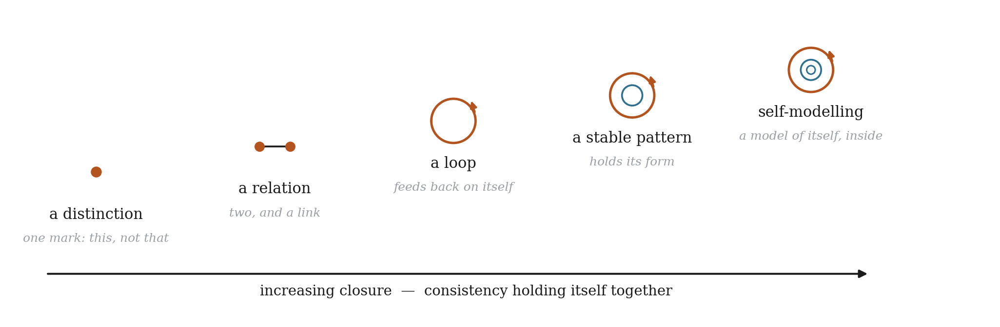
The reason I’m laying the ladder out now, before we have any of the geometry, is that it reframes the question we started with in Chapter 1, and the reframing is the whole point of this chapter.
We began by asking how a world could build itself from the inside, with nothing imported. Under the old picture, the one where to exist is to be made of stuff, that question is close to hopeless. If things are fundamentally lumps of substance, then a world has to get its substance from somewhere, and “somewhere” is an outside we already agreed we’re not allowed. You can’t bootstrap stuff out of nothing. But if to exist is to be a self-consistent pattern, the problem changes character entirely. A pattern doesn’t need to be made of anything imported. It needs to hold together. The question stops being “where did the material come from” and becomes “which patterns are consistent enough to sustain themselves with no outside support at all.” That is a question about logic and structure, and it is, at last, one you can actually attack.
So we’ve swapped one question for a better one. The old question, “what is the world made of,” keeps demanding an outside. The new one, “what could hold itself together with no outside,” is a question about pure consistency, and consistency is something we can reason about without smuggling anything in.
You can already feel where this has to go. If existence is closure, and closure comes in degrees, then somewhere out at the far end of the ladder there ought to be a most-closed thing. A pattern so thoroughly self-consistent that it leans on nothing whatsoever beyond itself, that imports not one scrap, that is complete in the strict sense of needing no completion because applying its own logic to it returns it perfectly and forever. A structure that closes the way the river’s whirlpool closes, except that it doesn’t even need a river. It holds itself.
If there is such a thing, it would be the natural candidate for a world that builds itself from the inside, because it would be the one pattern that requires no inside and no outside, no stage and no stuff, nothing but its own relentless agreement with itself. The bet of this book, you’ll remember, is that there is one such pattern, unique, a piece of pure geometry.
It’s time to go and find it. To do that we have to leave the river behind and ask a question that sounds like it belongs to a different book entirely, a question about symmetry and shape and which structures are the most perfectly balanced that can exist in any number of dimensions. That’s where the crystal comes from, and it’s where we go next.
Take a triangle with all three sides equal and spin it a third of the way round. It looks just as it did before. The same is true of a square turned a quarter turn, a pentagon turned a fifth. These shapes have symmetry, and symmetry is just this: a way of moving a thing that leaves it looking unchanged. The more such moves a shape allows, the more symmetric we say it is.
Now climb into three dimensions and ask for the most symmetric solids you can make, the ones built entirely from identical regular faces meeting in identical ways at every corner. The ancient Greeks found them, and the remarkable thing, the thing I want you to feel rather than merely read, is that there are five. The tetrahedron, four triangles. The cube, six squares. The octahedron, eight triangles. The dodecahedron, twelve pentagons. The icosahedron, twenty triangles. That is the complete list. Not the complete list anyone has found so far. The complete list there will ever be.
You can prove this to yourself in an afternoon with nothing more than the fact that the angles around any corner have to add up to less than a full turn, or the corner can’t pull together into a peak. Work through the possibilities and they run out almost immediately. Three pentagons at a corner closes up into a dodecahedron. Four leaves no angle to spare. There is no sixth Platonic solid, not because no one has been clever enough to find it, but because the geometry slams the door. Try to build one and the shape refuses. The angles won’t agree.
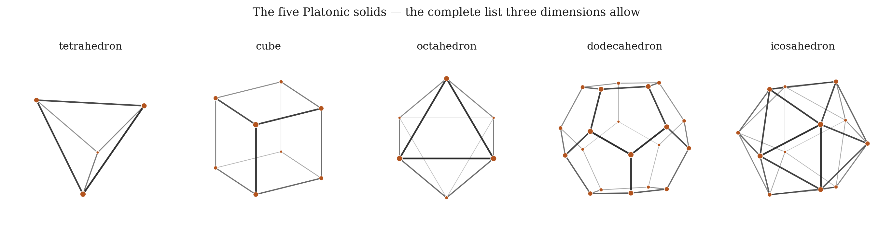
I dwell on this because it is the cleanest example I know of an idea we met in the last chapter wearing different clothes. The demand for perfect regularity is a strict filter. Feed every conceivable solid into it and almost all of them are rejected, and what comes out the other side is not a matter of taste or convention. It is forced. Five, and only five. The most symmetric things are not chosen. They are what’s left when consistency has finished saying no.
This is the spirit in which to meet the crystal.
We live in three dimensions of space, so the Platonic solids feel like the end of the story. They are not. Symmetry doesn’t stop at three dimensions; the mathematics carries on perfectly happily into four and beyond, even though we can’t picture the results directly. And the question that built the five Platonic solids can be asked again one floor up. What are the most symmetric objects you can make in four dimensions?
The answer, found by the Swiss mathematician Ludwig Schläfli in the nineteenth century, is that there are six of them. Six regular four-dimensional shapes, the higher cousins of the Platonic solids. Most have familiar-sounding analogues. There’s a four-dimensional version of the tetrahedron, and of the cube, and of the octahedron. But two of the six are new and strange, with no real counterpart below, and one of those two is the object this whole book turns on.
It is called the 600-cell, and it is the four-dimensional sibling of the icosahedron, the most spherical and most intricate of the six. Where the icosahedron is built from twenty triangles, the 600-cell is built from six hundred tetrahedra, little three-dimensional pyramids, fitted together in four-dimensional space into a single flawless figure. It has a hundred and twenty corners. Every one of them is identical to every other. At each corner the shape looks the same in every direction you turn. And there are so many such turns, so many ways of moving the 600-cell onto itself without changing it, that writing them all out fills a respectable table: fourteen thousand four hundred distinct symmetries, each one a rotation or reflection that leaves the figure looking untouched.
That is what I mean by a crystal. Not a loose metaphor about sparkle. A crystal in the proper sense is matter that has found its most ordered arrangement, the same motif repeated in perfect register in every direction, and the 600-cell is the most ordered arrangement its dimension allows. Rigid. Faceted. Identical from every corner. If you could hold one and turn it in your hands, every turn would show you the same thing, the way a cut diamond throws the same fire from every face. It is the gem the geometry of four dimensions permits, the one with the most symmetry that four dimensions can carry.
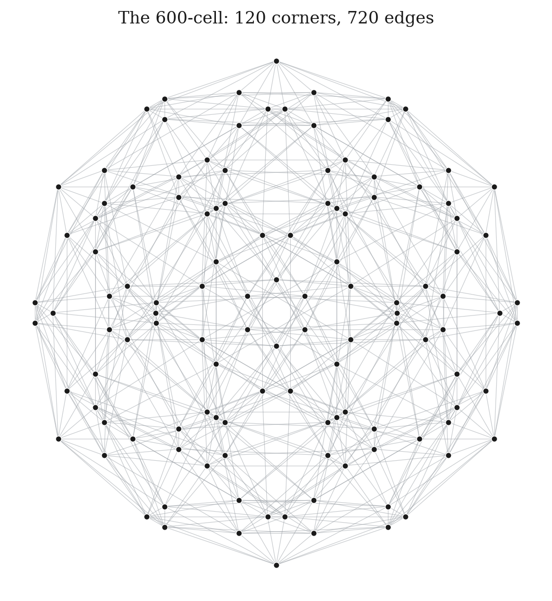
And threaded through all of it is a number we are going to keep meeting. The proportions of the 600-cell, the distances and angles that fix its shape, are governed by the golden ratio, the proportion that the Greeks already knew and that turns up in the pentagon, in the spiral of a shell, in the arrangement of seeds in a sunflower’s head. The golden ratio is what you get when you ask for the most irrational proportion there is, the one least well approximated by any simple fraction, and it sits at the dead centre of the 600-cell’s design. The crystal is golden to its core, its every distance and angle set by that ratio. Hold that thought. It will come back with interest when we get to where the particle masses come from.
There is one more rung worth naming now, though we won’t climb onto it properly until much later, because it is where the crystal’s story reaches as high as it goes.
Keep going up. Four dimensions, five, six, seven, eight. In most dimensions the supply of exceptionally symmetric structures is unremarkable, a few regular shapes and nothing to write home about. But in a handful of special dimensions something extraordinary happens, a structure of symmetry so dense and so perfect that mathematicians have spent over a century mapping its consequences. The peak of all of them lives in eight dimensions, and it has a name that has leaked out of the textbooks and into a certain kind of late-night speculation: E8.
E8 has a claim to maximality that is precise rather than poetic: it is the largest of the five exceptional Lie symmetries, the end of that special list, and its lattice is the densest packing of spheres that eight dimensions permit, a fact only proven in full this past decade. It is a lattice, an infinitely repeating arrangement of points in eight-dimensional space, and around any one of its points sit two hundred and forty nearest neighbours, arranged with a regularity that is almost hard to believe when you first compute it.
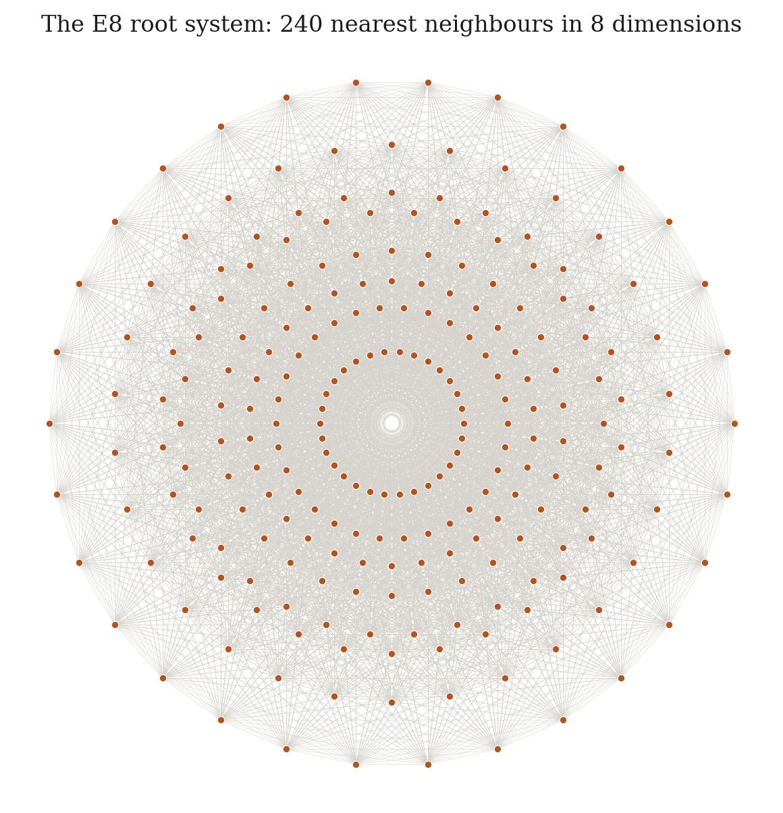
For decades E8 was admired as a kind of mathematical Everest, climbed for the view. What matters for us is a fact that sounds like a coincidence and is not: the 600-cell, our four-dimensional crystal, sits inside E8. The hundred and twenty corners of the crystal can be placed among the two hundred and forty neighbours of E8 in a way that fits, golden ratio and all. The crystal is a shadow of the eight-dimensional pinnacle, and the pinnacle is the crystal’s parent. We’ll need both before we’re done, the 600-cell for the world we can see and E8 for the structure standing behind it.I want to close by saying clearly what is solid here and what is still the bet.
Everything I’ve described in this chapter is ordinary, settled mathematics, as secure as the fact that there are five Platonic solids and not six. The 600-cell exists, has the properties I’ve given it, and is forced into being by the demand for perfect four-dimensional symmetry the same way the icosahedron is forced in three. E8 exists and stands where I’ve placed it. None of this is in dispute, and none of it belongs to the framework this book is arguing for. It would all be true if this framework were wrong. You could look it up.
There is a deeper sense in which this particular crystal is forced, and it is worth a few sentences, because it is the strongest version of “forced, not chosen” in the whole book.
Go back to the quaternions, the four-dimensional number system whose unit members form the three-sphere. A unit quaternion does something: it rotates space about an axis by an angle. So the three-sphere is a surface whose points are operations, the rotations of ordinary space, and multiplying two of them is doing one rotation and then the other.
Now ask for a crystal in this arena, a finite set of these points that holds together as a structure rather than a random scatter. For the set to be self-consistent, doing one of its rotations after another has to land you back on a point of the set, never outside it. A set with that property is what mathematicians call a group, and the question sharpens to: which finite groups of these rotation-points exist? The answer is an old and complete list, and on it sit a few exceptional cases, the largest with exactly a hundred and twenty members. Add the demands that the structure have no loose part that could be quietly switched off, no simpler shadow it casts, and nothing larger to contain it, and the list collapses to a single survivor. The hundred-and-twenty-member group is the only one that passes every test. Place its members in the space they rotate, and they are the hundred and twenty corners of the 600-cell.
This is forcing of a sharper kind than “the prettiest shape.” The crystal’s corners are not points someone scattered on a sphere; they are the rotation operations themselves, and the shape is what those operations look like stood up in the space they act on. The crystal is built out of its own symmetries. And when you ask, by a calculation using nothing but the table of which rotation times which gives which, how the crystal’s natural patterns combine, the answer that comes back is the diagram of E8, the eight-dimensional pinnacle, drawn from the inside. The link to E8 is no ornament hung on afterward; it is what the crystal says about itself when you ask.
The bet, the thing that is the framework’s own and not mathematics’ common property, is the claim that one of these forced, maximally consistent structures is not merely a beautiful object but the actual scaffolding of the physical world. That the crystal we’ve just met is the self-consistent pattern from the last chapter, the one thing closed enough to hold itself together with nothing imported, and that we are living inside it. That is a large claim and I am not going to slip it past you as though it followed automatically from the existence of the 600-cell. It doesn’t. The 600-cell would exist regardless. The question is whether it does any work, whether treating it as the substrate of reality buys you anything you couldn’t get otherwise.
The honest test of a claim like that is whether the structure knows things it has no business knowing. A pretty shape that merely sits there, however symmetric, explains nothing. A shape that, once you take it seriously as the substrate, hands you facts about the world you thought you had to put in by hand, that is a different matter. So we should go and interrogate the crystal. We should treat it, just provisionally, as the thing reality is built from, and ask it the most basic question we can think of, the one we have been assuming the answer to since page one without ever justifying it.
How many dimensions does space have? Let’s see if the crystal already knows.
Behind the maths. That the hundred-and-twenty-point group is the unique perfect, maximal one, that it is the 600-cell, and that its multiplication table alone reproduces the diagram of E8, are set out in full in Paper LIV, The Forced Crystal, and checked by the verify_crystal_forcing.py suite — fourteen tests, each with a deliberate wrong-answer control. To run it yourself, clone the companion repository and run bash run_all_verifications.sh; every figure and claim in this book regenerates from it.
Companion: https://github.com/vfd-org/crystal-and-clock-companion
Hit a drum and you hear its size. Not consciously, not as a number, but your ear knows at once whether the sound came from a small tight bongo or a great orchestral kettledrum, and it knows because the two produce different sets of tones. Every object that can vibrate has a particular collection of frequencies it likes to ring at, fixed by its shape and size and nothing else. A short string sounds a high note, a long one a low note. A small drumhead packs its overtones high and close, a large one spreads them low. The list of frequencies is a kind of acoustic fingerprint, and from it, if you listen carefully enough, you can read a surprising amount about the thing that made the sound.
In 1966 a mathematician named Mark Kac asked the question in its sharpest form: can you hear the shape of a drum? Could you, from the complete list of frequencies alone, with no peeking, reconstruct the outline of the drumhead that produced them? The full answer took decades and turned out to be subtle, but the headline is the part that matters here. You can hear an enormous amount. You can hear the drum’s area. You can hear its perimeter. You can hear how many holes it has. The spectrum, that bare list of frequencies, is dense with geometric information, far more than anyone expected. The shape leaves its signature in the sound.
I bring this up because the crystal can be struck too, and it is worth finding out what note it sounds.
The 600-cell is not a physical drum, so we have to be careful about what “strike it and listen” even means. But the mathematics is honest and not hard to describe. The crystal has a hundred and twenty corners, and each corner is joined to a certain number of its neighbours by edges. That pattern of connections, who is next to whom, is the entire content of the crystal as far as vibration is concerned. You don’t need its coordinates in four-dimensional space, you don’t need to know it’s golden, you don’t even need to know how many dimensions it lives in. You need only the bare web of which corner touches which.
Hand that web to the standard mathematical operation that governs how a disturbance spreads across any network of connected points, and the operation comes with a spectrum, exactly as a drum does. A list of natural frequencies at which the crystal “rings.” And like the modes of any symmetric object, these frequencies come in families. Several distinct patterns of vibration can share the same frequency, the way several different notes can be played at the same pitch on different strings. So the spectrum isn’t just a list of frequencies; it’s a list of frequencies each marked with a number, the number of independent vibration patterns that ring at that pitch. Mathematicians call that number the multiplicity. It is the size of each family.
Here is what comes out when you run the calculation, and I want to be precise that this is a calculation, a short one, fed nothing but the web of connections. The families of vibration come in sizes one, four, nine, sixteen, twenty-five, thirty-six. After that the pattern folds over and a few more families appear, which we’ll have a use for much later, but the leading run is unmistakable. One, four, nine, sixteen, twenty-five, thirty-six. The perfect squares, in order, one after another.
You can see the whole spectrum laid out in Figure 4.1. The tall stems in the foreground are those square families, climbing one-four-nine-sixteen-twenty-five-thirty-six; the few shorter stems off to the right are the fold-over we’ll return to. The point is the squares, and the point is that nobody put them there.
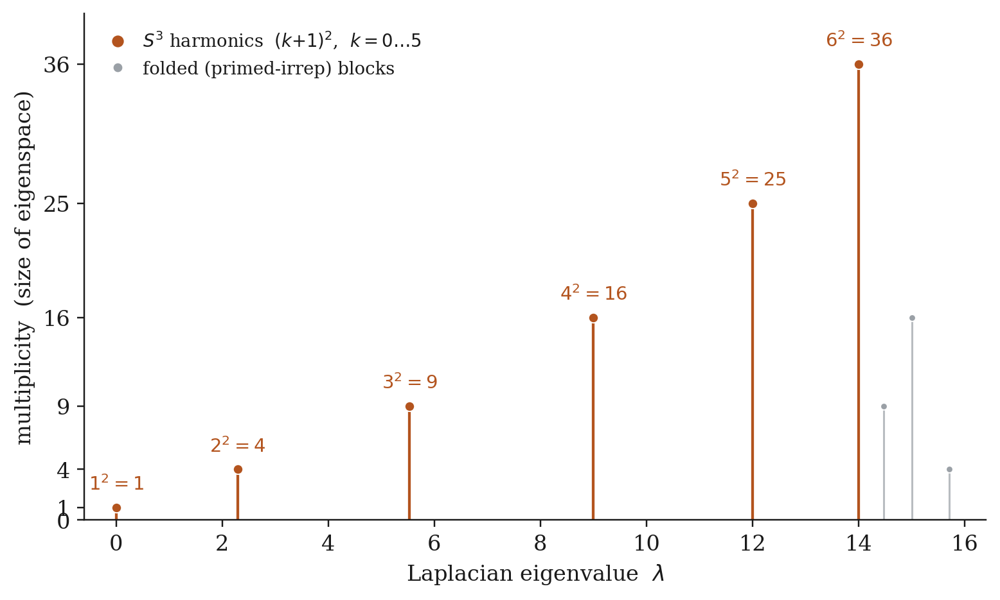
A run of perfect squares might look like a curiosity until you know what it’s the fingerprint of, so let me tell you, because this is the moment the chapter turns.
Every round surface has its own characteristic families of vibration, its own way of carving up sound into patterns, and the sizes of those families are a dead giveaway for the dimension of the surface. Take the ordinary sphere first, the two-dimensional surface of a ball, the kind of sphere we can actually see. Its natural patterns are the ones a geophysicist uses to describe the wobbles of the Earth or a chemist uses to draw the shapes of electron orbitals. They come in families of size one, three, five, seven, nine: the odd numbers. One steady mode, then a family of three that lean along the three directions, then five, then seven, climbing by twos. Any two-dimensional sphere, anywhere, sounds in odd-numbered families. That is its acoustic signature, and it is fixed by the fact that the surface is two-dimensional.
Now go up. The three-dimensional sphere, the surface of a four-dimensional ball, is a thing we cannot picture but can describe perfectly. We met its home dimension a chapter ago; it is exactly where the 600-cell’s hundred and twenty corners live, all at the same distance from the centre, all on one three-dimensional spherical surface in four-dimensional space. And the three-dimensional sphere has its own families of vibration, with their own characteristic sizes. They are not the odd numbers. They are one, four, nine, sixteen, twenty-five: the perfect squares.
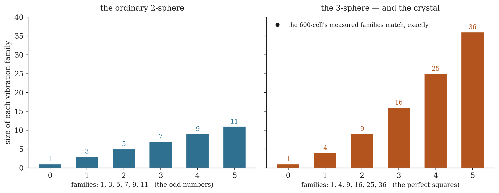
So look again at what the crystal told us. We struck it knowing nothing but its connections, asked for its families of vibration, and got back one, four, nine, sixteen, twenty-five, thirty-six. The perfect squares. The acoustic signature of a three-dimensional sphere, sounded back at us by a structure we fed no information about dimension at all. The crystal rings like the surface of a three-dimensional sphere because, as far as vibration can tell, that is what it is. The number three was never an input. It came out of the connections, the way the area of a drum comes out of its overtones.
I called this the undismissable result in the introduction and I’ll stand by the word. It does not lean on any of the framework’s bets. It uses no interpretation. It is a fact about a particular finite object, the kind of fact you could check yourself with a few lines of code, and you would get the same squares I did, because the crystal is the crystal and its connections are what they are. The figure in this chapter was drawn straight from that calculation, nothing retouched. If you wrote the code from scratch tonight, your drawing would match it.
And the squares are only the first of three independent ways the crystal says “three.” I’ll keep the other two brief, because the squares are the heart of it, but they deserve a mention so you know the result isn’t resting on a single coincidence. The first is that the actual frequencies, not just the family sizes, match the three-dimensional sphere’s predicted frequencies exactly, by a clean formula with the golden ratio sitting inside it, to the last decimal place a computer will show you. The second is older and more general. There is a law, going back to Hermann Weyl a century ago, that connects how fast the number of vibration modes piles up as you climb in frequency to the dimension of the thing vibrating. Apply Weyl’s law to the crystal’s spectrum and out comes a dimension of almost exactly three. Three ways of asking, three times the same answer. The crystal does not merely permit three dimensions. It insists on them.
There is a fourth thing the connections do, and it is the one that shuts the door on any lingering suspicion that a dimension was smuggled in. A sceptic might still worry that the crystal was a four-dimensional object to begin with, that its six hundred cells and its home in four-dimensional space were quietly doing the work behind the scenes. So strip all of that away. Hand the calculation nothing but the bare table of which corner touches which, a grid of yes-or-no entries with no coordinates, no distances, no hint of a dimension anywhere. From that table alone the vibration patterns can be made to assign each of the hundred and twenty corners a position, and when you do, every corner lands on a single sphere to fifteen decimal places, and every angle between them reproduces the 600-cell’s own. The shape rebuilds itself out of the connections. And the finishing touch: the closest the reconstructed corners come to one another is at an angle whose cosine is the golden ratio over two. That is the very relation that defined the crystal’s edges in the first place, so marking those closest pairs hands you back the connection table you began with. Connections to spectrum to shape and back to connections, the circle closes on itself. There was nowhere for a smuggled dimension to hide, because the bare grid of touches held the dimension, the sphere, every angle, and the golden ratio, all along.
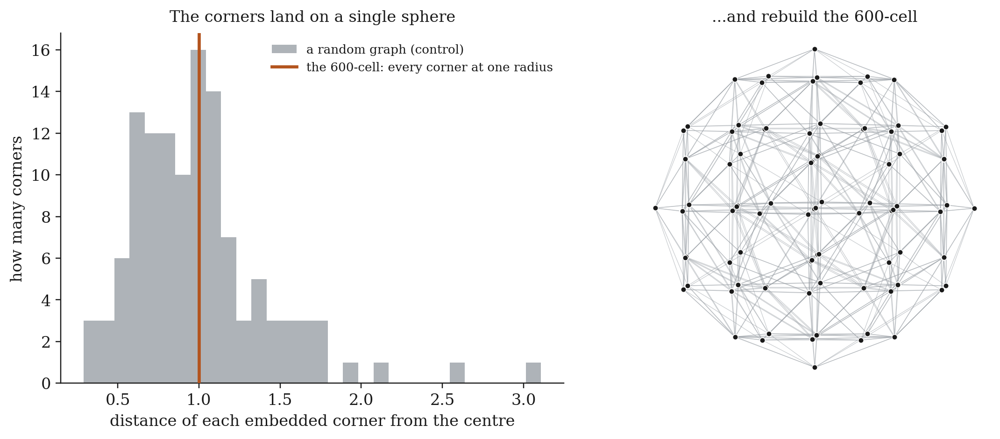
I want to hold the line between the two columns carefully here, because this is a chapter where it would be easy to get carried away, and getting carried away is the failure mode I promised to avoid.
What is solid, fully and without qualification, is that the 600-cell’s spectrum carries the signature of a three-dimensional sphere, three times over, with no dimensional input. That is mathematics. It is true regardless of whether this framework is right about anything. Strike this crystal and it sounds in three dimensions; that much you can take to the bank.
What is the bet, the interpretation, the thing I am flagging in the second column, is the step from “the crystal’s spectrum is three-dimensional” to “and that is why the space you live in is three-dimensional.” Nothing forces that step. You could hold that the squares are a true and pretty fact about a four-dimensional polytope and refuse to read any cosmic significance into them, and you would not have made an error. The framework asks you to read significance into them, to take the crystal seriously as the substrate of the physical world and notice that, when you do, the dimension of space stops being a brute fact you have to accept and becomes something the substrate already contains. I find that step worth taking. I am telling you plainly that it is a step, and that the squares themselves do not compel it.
But I’d ask you to notice how unusual the situation is. The hardest thing for any theory of why space is three-dimensional is that the number three has always had to be put in by hand. Every physics we have ever written assumes it. Here is a structure that wasn’t built to explain dimension at all, that was forced into existence by a pure demand for symmetry centuries before anyone connected it to physics, and it turns out to have the number three written into its very ring. That is the kind of thing that makes a step worth taking even when it isn’t compelled.
There is, though, a gap in what we’ve shown, and I don’t want to paper over it. Knowing that space is three-dimensional is not the same as knowing what it is like to be inside it. A sphere sounding in three families does not yet tell you why, standing in a room, you can point in three independent directions, why left and up and forward come as a clean perpendicular trio rather than some blurry continuum of options. The crystal knows the number. Does it know the directions? Where would three actual axes come from, handed to a creature standing at one of its corners?
That turns out to have an answer too, and it comes from the one feature of four-dimensional space I have been quietly saving. Let me show you where your three directions are hiding.
Behind the maths. The three-times-over signature of dimension three — the perfect-square multiplicities, the exact frequency formula with the golden ratio inside it, and Weyl’s count — together with the reconstruction of the whole shape from its bare connections, are Paper LV, The Rendering Layer and Paper LIV, The Forced Crystal, verified by verify_rendering_layer.py (21 tests) and verify_crystal_forcing.py. Figures 4.1 and 4.3 are drawn straight from that computation, nothing retouched.
Try to comb a coconut. Cover it evenly in hair and attempt to lay every strand flat against the surface, all of them smooth, none of them sticking up. You will fail, and not for lack of skill. There is a theorem that says you must fail, that on the surface of any ordinary ball there has to be at least one point where the hair refuses to lie down, a crown or a cowlick or a parting where it stands up or swirls. Mathematicians call it the hairy ball theorem, which is the kind of name mathematicians give things when they are enjoying themselves. The same fact is why there is always at least one point on Earth, somewhere, where the wind is not blowing horizontally, and why you cannot draw a perfectly smooth set of arrows covering a globe.
This sounds like an obstacle, and on a two-dimensional sphere it is. But it is pointing at something, and the something is the subject of this chapter. The reason you can’t comb a sphere is that a sphere can’t carry a smooth set of directions. There is no way to plant, at every point, a tidy little arrow pointing “this way” that varies smoothly as you move across the surface. The hair always tears somewhere. And if a surface can’t even carry one smooth direction, it certainly can’t hand a creature standing on it a clean set of perpendicular axes to call left, up, and forward.
Our world does that, though. Stand anywhere, in any room, and you have three perfectly good perpendicular directions, with no cowlick and no torn place where they give out. Space hands them to you everywhere, smoothly, without exception. So if space is the surface of a sphere, as the crystal’s ringing told us, it had better be a very particular kind of sphere. The kind you can comb.
Most spheres can’t be combed. The two-dimensional one defeats us, as we just saw. The four-dimensional and five-dimensional and six-dimensional ones defeat us too. There is a long mathematical story here, settled in the twentieth century, about exactly which spheres can carry a smooth set of directions and which can’t, and the punchline is startling in its strictness. Out of all the spheres in all the dimensions there are, only a tiny handful can be combed. And the most important of them, the one that can carry not just one smooth direction but a full set of three perpendicular ones at every point, is the three-dimensional sphere. Our sphere. The one the crystal lives on.
This is not a minor convenience. It is the difference between a space that can host directions and one that can’t, and it singles out the three-dimensional sphere from almost every other surface as the rare place where a creature can be handed a consistent left, up, and forward everywhere it goes. The crystal’s home is, by a property most spheres lack, exactly the kind of sphere that a world with directions in it requires. We did not arrange this. It is a fact about which dimensions permit smooth combing, and three is one of the lucky few.
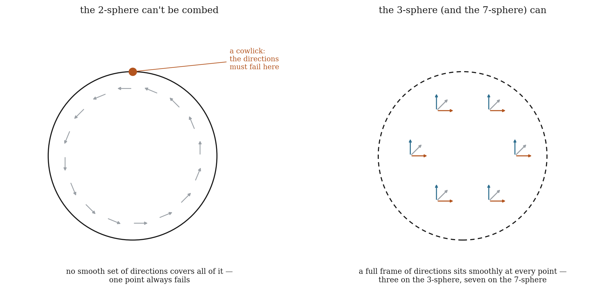
But to see why the three-sphere can be combed, and where the three directions actually come from, we need to meet the strange and beautiful number system that lives in four dimensions.
On the sixteenth of October, 1843, the Irish mathematician William Rowan Hamilton was walking with his wife along the Royal Canal in Dublin when the answer to a problem he had been chewing on for years arrived all at once. He was so afraid of forgetting it that he stopped and carved the formula into the stone of Broome Bridge with his penknife. The carving has worn away, but there is a plaque there now, and mathematicians still make the pilgrimage.
What Hamilton had been after was a way to multiply in higher dimensions. Ordinary numbers live on a line. The complex numbers, which mathematicians had grudgingly accepted by Hamilton’s day, live on a plane: each one is a step along the familiar number line plus a step in a new, perpendicular direction marked by a special quantity called i, the square root of minus one. The unit complex numbers, the ones a single step from the centre, form a circle. Complex numbers are the natural arithmetic of two dimensions, and they are wonderful, and Hamilton wanted the four-dimensional version.
The thing he carved into the bridge was that you cannot do it with one new imaginary direction. You need three. His quaternions, as he called them, have the ordinary number line and then not one but three perpendicular imaginary directions, three independent square roots of minus one, which he labelled i, j, and k. A quaternion is a step along the real line plus a step along each of i, j, and k: four numbers, four dimensions. And the unit quaternions, the ones a single step from the centre, do not form a circle as the complex units do. They form a three-dimensional sphere. The very sphere the crystal lives on. The hundred and twenty corners of the 600-cell are a hundred and twenty particular unit quaternions, picked out as the most symmetric arrangement the three-sphere allows.
Now watch what those three imaginary directions do, because this is the whole chapter in one move. Sit at any unit quaternion, any point on the three-sphere. The three imaginary units give you three ways to take a step: multiply by i, multiply by j, multiply by k. Each multiplication nudges you in a direction along the surface, and the three directions you get are perpendicular to each other, a clean little set of axes planted right where you’re standing. Because quaternions can be multiplied smoothly, this works at every point at once, with no tearing and no cowlick. The three-sphere can be combed because it is the surface of the unit quaternions, and the quaternions hand it three smooth perpendicular directions everywhere by the simple act of multiplying.
So here is your left, up, and forward. These axes are no convention, no human choice of coordinates, nothing a physicist drew on a blackboard. At every single point of the crystal’s home there is a built-in trio of perpendicular directions, supplied automatically by the arithmetic of the space itself. An observer sitting at any corner of the crystal is equipped, the instant it is anywhere at all, with exactly three axes, and it gets them for free.
I want to put two facts side by side, because the book turns on their being the same fact.
In the last chapter the crystal’s spectrum told us that space is three-dimensional. The families of vibration came in perfect squares, the signature of a three-sphere, and the number three fell out of the bare web of connections with nothing about dimension fed in.
In this chapter the crystal’s directions told us that space comes with three perpendicular axes at every point. And the number three came from somewhere specific: there are three imaginary units, i and j and k, because that is how many perpendicular imaginary directions you need to multiply consistently in four dimensions. The imaginary part of a quaternion is three-dimensional, and that is where your three axes live.
These are not two coincidences that happen to land on the same number. They are one fact seen from two sides. The three-sphere is three-dimensional, and the three-sphere is the unit quaternions, and the imaginary quaternions number three. The dimension of space and the count of your perpendicular directions are the same three because they are the same three-sphere, sounded in Chapter 4 and combed in Chapter 5. The crystal does not merely happen to suit a three-dimensional world with three axes. A three-dimensional world with three perpendicular axes is what the crystal, taken seriously, has no choice but to look like from the inside.
All of this, I should say clearly, is ordinary mathematics, as solid as anything in this book. Hamilton’s quaternions are a hundred and eighty years old. That the unit quaternions form a three-sphere, that the three-sphere is combable, that multiplying by i, j, and k lays down perpendicular axes everywhere, these are textbook facts, not claims of the framework. The framework’s bet, again, is only the reading: that this is more than a curiosity about a number system, that it is the reason your room has the directions it has. I’ll keep flagging the bet whenever we lean on it. The quaternions themselves owe nothing to it.
We have come a fair distance. We have a substrate, the crystal, forced into being by symmetry alone. We have shown that taken as the stuff of the world it already contains the dimension of space and the three directions you move in. What we do not yet have is a world. A dimension and a set of axes is a stage, bare and lit and empty. Nothing is happening on it. Nobody is looking. There is no scene, no change, no flow of time, none of the felt texture of being somewhere. A real world is not just a space; it is a space with something going on in it, seen from somewhere within.
How does the still, silent crystal turn into a scene that someone is looking at? That is the hardest and most interesting question in the book, and it is where we turn next.
Behind the maths. That the three-sphere carries a smooth frame of three perpendicular directions at every one of the crystal’s corners — the quaternionic frame field — is part of Paper LV, The Rendering Layer, built and checked at all hundred and twenty corners by verify_rendering_layer.py. That the spheres you can comb at all are exactly three, the circle, the three-sphere, and the seven-sphere, with only the latter two roomy enough to host a world, is Adams’s theorem, cited there as classical mathematics, not a claim of the framework.
You have never seen the world. What you have seen is a reconstruction of it, assembled a few centimetres behind your eyes, and you have seen it so seamlessly your whole life that the reconstruction and the world feel like the same thing. The light arriving at your retina is a riot, an upside-down smear of photons with no obvious front or back, no objects, no depth, no scene. Out of that chaos your brain builds the calm furnished room you take yourself to be sitting in, complete and stable and apparently just there. The room you see is real enough. But it is something your nervous system makes, an organised field of here-is-what’s-around-you, centred on the one point in all of space where you happen to be.
I start with vision because it carries the idea I need, and the idea is that a scene is not the same as the stuff a scene is made of. A scene is the stuff organised around a viewpoint. The same photons, fed to no one, stay a smear. They become a room only when something gathers them into a coherent picture from a particular place. Take that seriously and it raises a question about the crystal that we have been circling since the start of the book. We have a substrate. We have shown it carries three dimensions and a set of directions. What we do not yet have is anybody home. We have the makings of a stage and no scene playing on it. So how does the silent crystal become a world that someone is looking at?
Picture the crystal as raw as it really is. A hundred and twenty corners, and at each corner a single number, some value of the underlying field. That’s the whole of it. A list of a hundred and twenty numbers. You could write them in a column on a spreadsheet, and the spreadsheet would contain everything the substrate is doing at that instant, and it would look nothing at all like a world. It’s the photon smear before the brain gets to it. Complete, and meaningless as a scene.
To turn that column of numbers into something you could look at, three things have to come together, and we’ve quietly assembled all three over the last few chapters. You have to be somewhere; that’s the anchor, the particular corner an observer is sitting at, which the framework calls the observer’s position. You have to have directions to lay the scene out along; those are the three perpendicular axes the quaternions hand you at every corner, from Chapter 5. And you have to spread the bare numbers out into a smooth field across the little patch of space around you, so that instead of a hundred and twenty isolated values you get a continuous picture, this much here, a little less just over there, fading off with distance. That spreading is the act I’m going to call looking.
The spreading is where the work happens, so I want to be careful about it. It’s the technical heart of the chapter, and it’s also where the framework does something I find quietly impressive. You might think there are a thousand ways to smear a set of numbers into a smooth field, and that the framework just picks a convenient one and hopes you won’t ask. The opposite is true. There turns out to be essentially one natural way to do it, forced by a handful of requirements so mild you’d be hard pressed to object to any of them.
The first requirement is that you can’t look and see a negative amount of something. Whatever the scene is showing, a brightness, a density, a presence, the smoothing has to keep it the right side of zero where it started positive. The second is that looking at nothing should show you nothing; if the substrate is in its plain unexcited state, the scene should be plain too, with no phantom features conjured out of the smoothing itself. The third is that the operation should respect the crystal’s own symmetry, treating every direction and every corner even-handedly, playing no favourites that the substrate doesn’t already have. And the fourth, the one that pins it down completely, is that the smoothing should be the substrate’s own response, the way the crystal naturally answers a disturbance, the spreading it would do on its own if you poked it at one corner and watched the influence ripple out to the neighbours.
Those few demands are enough. They single out one operation, a specific way of letting each corner’s value bleed into the corners around it, with the influence strongest nearby and dying away smoothly with distance. It comes with a knob, a single dial that sets how far the bleeding reaches. Turn the dial one way and the influence stays tight and local, and the scene is sharp and finely grained. Turn it the other way and the influence spreads wide, and the scene goes soft and coarse, the fine detail washing out. That dial is resolution. It is the difference between squinting and looking closely, between a glance and a stare, and it falls out of the mathematics as naturally as the rest. Looking, in this picture, is the substrate responding to its own state, at a resolution the observer sets, through the one smoothing its own structure allows.
If you want the recipe in a phrase, it is short. The crystal has a natural measure of lumpiness, an operation that compares each corner’s value to the average of its neighbours. Looking is, in effect, the inverse of that, softened by the resolution dial: out of all the fields consistent with the crystal’s state, it picks the single smoothest one the chosen resolution allows. Written in symbols it is the inverse of the identity plus the resolution squared times the crystal’s connection operator, which is a mouthful, but the picture it makes is plain. Figure 6.1 shows it. Poke a single corner, and the response spreads to the neighbours and dies away, sharply at fine resolution and gently at coarse, the local, fading influence a scene needs. The response stays positive everywhere, it leaves the blank state blank, and it favours no direction: the three plain requirements all met by the one operation.
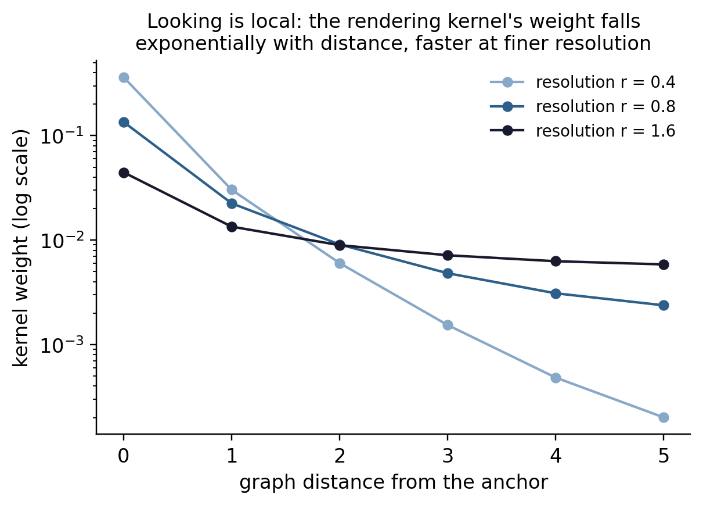
There’s a feature of the rendered scene that I want to dwell on, because it matches something about experience so closely that it’s worth slowing down for.
When you take the crystal’s state and spread it into a scene, the state comes apart into two pieces that behave very differently. We met them, in disguise, back in the chapter on closure. Part of the substrate is the invariant core, the deeply self-consistent centre that holds itself together and does not change. The rest is the active surface, where the substrate’s events happen, where the changing goes on. Render the whole thing and the scene inherits the split exactly. There is a part of every scene that is fixed, a steady backdrop that is the same at every moment and, remarkably, the same for every observer, a shared unchanging stage. And there is a part that moves, a foreground of events laid over the backdrop, different from instant to instant.
This division is no soft one drawn for effect. It is built into the crystal’s bare numbers. Of its hundred and twenty corners, twenty make up the invariant core and the other hundred make up the active surface, and which is which is forced by the same deep symmetry that has run through everything else. What makes the backdrop genuinely fixed, and not merely slow, is a fact about how the substrate changes: the operation that drives the dynamics is built entirely from the connections among the hundred surface corners, and it reaches the twenty core corners not at all. Their rows in it are empty. So however long the world runs, the core cannot move, not because it changes slowly but because the law of motion has no grip on it. The backdrop of every observer’s world is the rendered image of those twenty untouchable corners, and that is why it holds still.
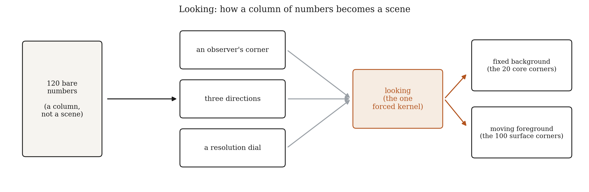
That is what it is like to be in a world. There is the room, which sits there, stable, the floor staying where the floor was, the walls holding still, a background you can rely on and largely stop noticing. And there are the things that happen in the room, the movement and the change, the foreground your attention tracks. We tend to lump these together as “the world,” but they are doing different jobs, and the framework says they come from different parts of the substrate: the steady backdrop from the invariant core, the passing events from the active surface. The world has a fixed set and a moving cast because the crystal has an unchanging centre and a changing edge, and looking renders both at once.
This is the chapter where I have to be most careful, and most honest, because we have arrived at the exact place where it would be easiest to say far too much, and where saying too much would be a betrayal of everything I promised on the first page.
Here is what the framework delivers, in the column you can check. Given the substrate, given an observer sitting at a corner with its three directions, there is a forced, unique operation that turns the bare state into a smooth field on the space around that observer, a field that splits cleanly into a shared fixed background and a private moving foreground. That construction is real, it is largely worked out, and the parts of it that can be tested on the actual crystal have been. The scene, as a mathematical object, is built.
Here is what I am not claiming, and I want it in plain sight rather than smuggled into a careful sentence later. I am not claiming that this rendered field is your experience. That when the substrate looks at itself in this way, the lights come on and there is something it is like to be the thing looking. The gap between “the framework constructs a scene” and “the scene is felt, from the inside, as a lived world” is the deepest unsolved problem in the whole programme, and it is not solved here or anywhere in this book. I’ll give it its proper hearing much later, in the chapter on what we don’t know. For now the honest statement is narrow and I’ll keep it narrow. The crystal, taken as the substrate and looked at by an observer within it, produces a structured scene with the architecture of a perceived world, a fixed room and a moving foreground laid out in three dimensions around a point of view. Whether that scene is merely structured like experience or is actually experienced, I am not going to pretend to know.
What we can say is that the scene, so far, is strangely still. We have a room and a foreground of events, but I’ve described them as though frozen, a single snapshot. A real world doesn’t hold still. The foreground moves, time passes, and it passes in a very particular way, flowing forward in waves rather than dissolving like a drop of ink in water. Where does the motion come from? What winds the clock? The answer is the surprise I planted in the first chapter, and it’s time to make good on it.
Behind the maths. The looking operation — the single forced kernel that turns the bare state into a smooth scene, and the clean split into a fixed background and a moving foreground — is the core of Paper LV, The Rendering Layer. The kernel’s uniqueness under its four mild requirements, and the twenty-core/hundred-surface split, are checked by verify_rendering_layer.py. Figure 6.1 is that kernel’s response, computed directly from the table of connections.
There are two ways a disturbance can spread, and the difference between them is the difference between our universe and a dead one.
Drop a pebble in a still pond. Rings race outward, cross the surface, rebound from the bank, and for a while the whole pond carries the memory of the splash in the motion of its surface. The disturbance travels. It keeps its shape, more or less, as it goes. And here is the strange part: a film of those ripples, run backward, still looks like perfectly good ripples. You would see rings rushing inward and gathering themselves at a point, which is unusual, but it breaks no law of physics. The pond doesn’t care which way you run the film. The motion of waves has no built-in direction.
Now drop a bead of ink into a glass of water. It blooms, softens, blurs, and within a minute it has spread to a uniform grey, and it stays grey forever after. Run that film backward and you see something that never, ever happens: a glass of grey water spontaneously gathering its colour into a single sharp bead. Your eye rejects it instantly as impossible. Diffusion, the slow smearing of ink into water or heat into a cold room, has a direction baked right into it. It goes one way. Toward more blur, always, never back.
Our universe is built on the first kind of motion, not the second. Light is a wave. Matter, at bottom, moves in waves. Sound, the quantum fields, the signals that let anything influence anything else, all of it propagates, travels, carries its shape across distance and can in principle run backward. The world is a pond, not a glass of settling ink. This is so basic that we never think to ask about it, and yet it is a genuine fork in the road. A universe could have been built on diffusion, on pure one-way smearing, and it would have been a universe where nothing travels and nothing lasts and no signal ever crosses a room. Why did we get waves?
The fork between waves and diffusion comes down, when you write the two kinds of motion as equations, to one small and decisive difference, and I can tell it to you without the equations.
It is about how time enters the law of motion. In the equation for diffusion, time enters once. The rule says, roughly, how fast a thing is changing right now depends on how lumpy it is right now, and that single “how fast it’s changing” carries a direction with it, the way a slope carries a downhill. Enter time once and the law knows forward from backward, the way the ink knows to blur and not unblur.
In the equation for waves, time enters twice, squared. The rule is about acceleration rather than speed, about how the rate of change is itself changing, and squaring has a curious effect: it erases the direction. A wave equation written for time running forward is the very same equation when time runs backward, because the two minus signs from reversing time cancel, the way two negatives make a positive. That cancellation is why the film of ripples looks fine in reverse. The law that governs waves cannot tell forward from backward. It is blind to the direction of time, and that blindness is what lets waves travel and rebound and run either way.
So the question “why waves and not diffusion” is really the question “why does time enter the law twice instead of once.” And that, it turns out, is a question the crystal can answer, through a feature I have been saving since the first chapter.
The crystal has a rhythm. Among its many symmetries, the fourteen thousand and more ways of turning it onto itself, there is one special turn that cycles its corners around in a steady repeating march, carrying each corner to the next position in a fixed sequence that comes back to where it started after ten steps. It is the closest thing the bare crystal has to a ticking, an intrinsic beat written into its structure, a built-in second hand sweeping through ten positions and round again. The framework calls it the pentagonal clock, and it is the substrate’s own notion of one tick following another, prior to any idea of time we might lay on top.
And here is the thing that makes the chapter. Hidden among the crystal’s symmetries is a move that takes that ticking and runs it backward. There is an operation, an ordinary symmetry of the crystal, that reverses the clock, sending the second hand sweeping the other way through its ten positions. The crystal contains its own reflection in time, a built-in mirror that swaps the forward march for the backward one, and that mirror is not something added from outside. It sits inside the crystal’s symmetry, as native to it as any of its rotations.
And I have been holding back the best part. That time-reversing mirror, when you ask what it actually is, turns out to be multiplication by i. The very same i that, two chapters ago, handed you one of your three spatial directions. The imaginary unit that gives you “left” is also the move that runs the crystal’s clock backward. One small piece of the quaternions’ machinery is doing double duty, laying down a direction of space with one hand and reflecting the flow of time with the other. I don’t think I can oversell how pleasing this is, and I’ve checked it on the actual crystal more than once because it seemed too neat to be true. It holds. The mirror that reverses the crystal’s time is the letter i.
Follow what that forces. The time-reversing mirror is an exact symmetry of the substrate, a move that maps the crystal precisely onto itself with nothing left over. And a law of motion that emerges from a structure has to respect that structure’s exact symmetries; it cannot wave them away. So whatever effective law governs how the rendered world changes from tick to tick, it has to look the same after the mirror as before, the same with the clock running backward as forward. A law in which time entered just once, with a direction built in, would fail that test at once, because reversing the clock would flip its sign and the law would not survive the mirror. The only laws that pass are the ones in which time enters twice, squared, where the two sign-flips cancel and the mirror leaves everything untouched. The crystal’s internal reflection forbids one-way diffusion and permits only two-way waves. Time enters the law twice because the crystal contains a mirror that demands it.
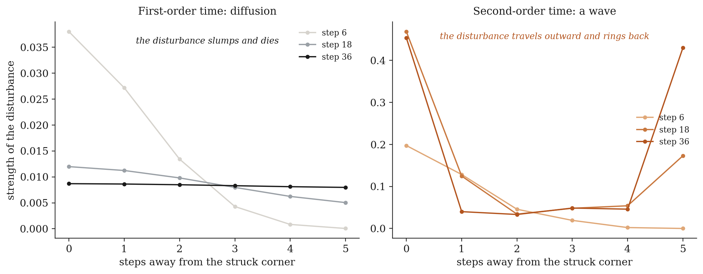
This is what I meant, all the way back in Chapter 1, by a clock wound by the crystal’s own symmetry. Time runs in waves, with the propagating, rebounding, signal-carrying character that makes a living universe possible rather than a dead smear, because the substrate holds within itself an exact reflection of its own ticking, and that reflection allows nothing else.
Let me sort the solid from the still-open, because this chapter mixes the two and you deserve to know which is which.
The mirror is solid. That the crystal has a ticking, a pentagonal clock built into its symmetry, and that there is an exact symmetry reversing it, and that this reversing symmetry is multiplication by i, are all facts about the crystal that I can compute and have computed. They sit firmly in the column you can check. So does the logic that an exact symmetry must be respected by any law emerging from the structure, and that a once-only, direction-carrying time term cannot survive a reversal mirror while a twice-over, squared one can. The argument that the crystal’s reflection forces wave-like time over diffusive time is clean, and it rests on a symmetry you can verify by hand.
There was a last technical mile owed here, the careful passage from the crystal’s discrete ticking to the smooth flowing time of the equations physicists actually write, and since an earlier draft of this chapter it has been walked. It turned out to be short. Turning a row of discrete ticks into a smooth rate of change means choosing how to combine neighbouring ticks, and the inner mirror allows only one such combination, the symmetric, second-order one, which is the wave operator. So time enters the law of motion twice over, a small theorem now rather than a promise. What honest accounting still owes is a deeper and separate thing, the smoothness of the arena itself rather than the running of time, and that debt belongs to gravity, where I take it up later in the book.
We now have a great deal. A substrate forced by symmetry. Three dimensions and three directions, read off its structure. A way of looking that turns it into a scene with a fixed backdrop and a moving foreground. And now a time that flows in waves, wound by the crystal’s reflection of its own clock. It is starting to look like a world.
But a physicist reading this has been waiting, with some impatience, for a particular kind of payoff, and they are right to wait for it. Beautiful structure is one thing. Numbers are another. Physics is in the end a science of measured quantities, of masses and sizes and strengths pinned down to many decimal places, and a framework that produced a lovely picture but no numbers would be a philosophy, not a physics. So it is fair to ask, and past time to answer: does any of this actually predict something you could measure? Let me show you where the numbers come from.
Behind the maths. That the crystal’s inner clock has an exact reversing symmetry, that the reversal is multiplication by i, and that this forces second-order — wave — time rather than one-way diffusion, is verified by verify_rendering_layer.py as part of Paper LV, The Rendering Layer. Figure 7.1 runs both candidate laws on the actual 600-cell graph, so you can watch the diffusion die and the wave travel.
A tuning fork has a note. Strike it and it sounds a definite pitch, four hundred and forty times a second for the A that orchestras tune to, and that pitch is fixed by the fork’s shape and size and nothing else. Now here is a fact from physics that sounds like a poem but is literally true: every particle is a tuning fork. An electron, a proton, any speck of matter at all, has a natural frequency, a rate at which its quantum field oscillates, and that frequency is its mass. Heavier means faster. The mass of a particle and the pitch of its tiny oscillation are the same fact in different units, joined by Einstein’s famous equation and the constants of the quantum world. To know a particle’s mass is to know its note.
I lead with this because it changes what the crystal’s spectrum was. Back in Chapter 4 we struck the crystal and read its families of vibration to learn the dimension of space. But a spectrum is a list of frequencies, and frequencies, we’ve just said, are masses. So the same list of tones that told us “three dimensions” is also, read in the right units, a ladder of masses. The crystal doesn’t only know how many dimensions to have. It comes with a built-in set of notes, and the question is whether those notes are the masses of anything real.
Before I tell you how that goes, I want to be clear about what a measurement is in this picture, because it isn’t quite what it is in ordinary physics.
A measurement, here, is a question put to the crystal. You arrange an observer, a way of looking, a particular projection of the substrate, and the arrangement is a question with a definite form, and the crystal answers with one of its natural values. Ask one kind of question, the kind that reads off the crystal’s bare tones, and the answer is a mass. Ask another kind, one that compares two tones and reads their ratio, and the answer is the strength of a force, a coupling constant, the number that says how fiercely particles push and pull. Ask a third kind, one that reads not a tone’s pitch but how widely its pattern spreads across the crystal, and the answer is a size, the physical radius of a particle. The crystal is one object, but there are several distinct ways of interrogating it, and each way reads off a different kind of physical number, all of them from the same underlying shape.
That is the claim in outline, and you should hear it with appropriate suspicion, because it is the sort of claim that is easy to make and hard to keep. A shape that can be massaged to yield any number you like has explained nothing; the danger is a recipe loose enough to fit anything. So the only measurements worth your attention are the ones where the recipe was fixed in advance, where there was no room to fiddle, and where the answer then had to match something measured in a laboratory that the framework did not get to see first. Let me give you the honest state of that, the good and the unfinished together.
On the encouraging side, the crystal’s ladder of tones lands on several of the known particle masses with real accuracy, the lighter building blocks of matter falling at the pitches the spectrum predicts. The sizes come out too. The proton, the workhorse of every atomic nucleus, has a measured radius, and the framework produces it from the spatial spread of the right mode to a fraction of a percent, with the size turning out to be a simple whole-number multiple of a length the proton already defines. These are genuine hits, and they are not nothing.
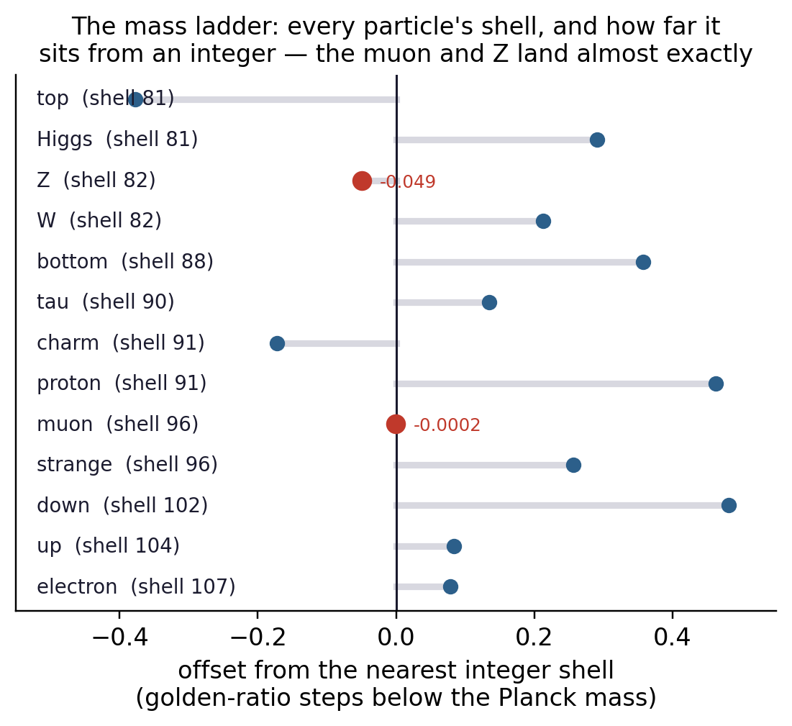
There is a newer one that I find hard to wave away as luck, because it reaches clear across the whole of physics. The muon, a heavy cousin of the electron, sits at a particular rung of this mass ladder, and from that single rung the framework predicts Newton’s constant, the number that sets the raw strength of gravity, to within two parts in ten thousand of the measured value. The strength of gravity, read off the place of one particle. I hold it carefully, for reasons I come back to in the closing chapter: it leans on that rung being a structural fact rather than a coincidence, and a small real gap remains between the prediction and the measurement that the framework still owes an account of. But a number that ties the feebleness of gravity to the mass of a muon, and lands that close, is not what a recipe loose enough to fit anything would hand you.
I am not going to let them carry more weight than they can bear, though, and there is a great deal the framework does not yet deliver. It does not produce the masses of the heavy quarks. It does not produce the masses of the W and Z and Higgs particles that carry the weak force. It has nothing yet to say about the neutrinos. The strengths of the forces themselves, the coupling constants that fix how fiercely each one acts, are not yet pinned down either. These are not minor gaps you could patch over a weekend; they are real and they are open, and any honest accounting has to put them on the table next to the hits. The crystal sings several of the right notes. It does not yet sing the whole score.
There is a single result I want to give you in full, because it is the one place where the framework was made to face data it had no hand in shaping, and because the way it came out is a small lesson in what honest evidence looks like.
The setup is a long-standing puzzle in particle physics. When certain heavy particles called B mesons decay, the angles at which the debris flies out have looked, across many years and several experiments, a little off from what the standard theory predicts. Not dramatically, but persistently, in a way that has launched a thousand papers. I should say exactly which puzzle this is, because the field has had more than one. It is the angular pattern of the decays written b → s μμ, seen in channels like B → K*μμ and Bs → ϕ μμ, the anomaly physicists track through a quantity they label C9. It is not the lepton-universality ratios, the ones called RK, which made headlines for years and were then found consistent with the standard theory in 2022; those are a separate measurement, and the framework does not rest on them. The anomaly the crystal speaks to is still live. The framework offers a particular shape for that discrepancy, a curve derived straight from the crystal, from the same response of the substrate that does the looking in Chapter 6, with no free knobs in its form, fixed by the geometry before any data was fit.
That fixed curve was then laid against five separate experimental datasets, gathered by two different collaborations, covering different decay channels. One number was allowed to float per dataset, an overall size for the effect, and nothing else; the shape of the curve never moved. And across all five, the curve pulled the same way the data pulls, with the sign of the effect coming out matching in five cases out of five, the same direction every time, from independent measurements. For a curve with no shape freedom, fixed by a polytope and not by the data, to point the right way five times running is the kind of thing worth reporting.
Here is the part a less careful book would skip, because this is where one would stop and take a bow. On the standard statistical test that asks whether the data actually prefers this curve over a plain conventional explanation, the answer is a tie. The crystal’s curve and a humble “just shift one number in the standard theory” account fit the current data about equally well; the data is not yet good enough to tell them apart, and if anything the bookkeeping tilts slightly toward the conventional account. There is also a documented wobble in the analysis, a point where an early, more favourable version of the result weakened when the calculation was done more carefully, and that drift is the single largest methodological uncertainty in the whole exercise, openly recorded. And the datasets were looked at before the geometry-only ranking was checked against them, which is a real if minor sin against the ideal of a fully blind test.
So what is it worth? Not a discovery. I want to say that plainly. Nobody should read this chapter and conclude the crystal has been confirmed by experiment, because it hasn’t. What the result shows is narrower and still real: a curve with no adjustable shape, derived from pure geometry, gives a consistent and correctly-signed account of a genuine anomaly across two collaborations and several channels, while remaining, by the strict statistics, indistinguishable from the conventional story on the data we have. That is a framework behaving the way a candidate theory should behave at this stage, making a fixed prediction and surviving contact with real numbers, without yet having earned the right to claim victory. Sharper data, of the kind these experiments will keep producing, is what would turn the tie into a verdict one way or the other. Until then I’ll call it what it is: encouraging, fixed, externally tested, and undecided.
The obvious objection to everything in this chapter has a name, and the name is numerology. Take a rich enough structure, allow yourself enough freedom in how you read numbers off it, and you can hit almost any target you please; the history of physics is littered with numerical coincidences that turned out to mean nothing. A reader who is not on guard against this is being careless, and so am I if I do not meet it squarely. So let me sort the chapter’s numbers by exactly what kind of claim each one is.
Fixed before the comparison. The shape of the B-meson anomaly curve was set by the geometry before any data was looked at, with no freedom in its form; only one overall size was allowed to float per dataset. The proton’s radius comes out as a whole-number multiple of a length the proton already defines, with the multiple fixed by the structure rather than chosen. These are the cases where the framework had no room to fiddle, and they are the ones worth the most.
Fitted, and labelled as fitted. Some quantities are matched rather than derived: the framework lands a number on a measured value, but the map that gets it there is not yet forced from first principles. The book grades these “witnessed,” never “derived,” and the Honest Ledger at the back marks each one so you are never left guessing which is which.
Noticed after the fact. A few results were spotted once the measured value was already known, rather than predicted ahead of it. Certain particle placements on the mass ladder are of this kind. A match found after the fact is weaker than a prediction made before it, and I have tried never to dress one up as the other.
What would actually falsify it. This is the part numerology never has. A genuinely derived mass that missed its measured value would break the framework, because there is no shape freedom to absorb the miss. Sharper B-anomaly data that killed the fixed-shape curve would settle that case against us. And the gravitational constant read off the muon’s rung rests on one structural assumption: derive that rung’s placement independently and then have it miss the measured constant, and the anchor falls. These are real, named ways for the framework to be wrong.
What has not been done at all. And the honest gap, stated plainly: the heavy quarks, the carriers of the weak force, the neutrinos, the strengths of the couplings, the framework has not predicted these. A scheme loose enough to fit anything would have an answer for everything, and this one conspicuously does not. I want to be careful about what that is worth. It is not evidence that the framework is right, and I will not dress it up as such; absence of an answer supports nothing. What it shows is the narrower thing only, that the framework is genuinely constrained rather than a recipe flexible enough to absorb any result. The missing predictions are a debt, owed and unpaid, and I record them as one.
Because a sceptic is right to want this laid out rather than asserted, here is the same thing as an audit, one row per number, with nothing hidden:
| Quantity | Free knobs | Order it was found | Blinded? | Grade | What would break it |
|---|---|---|---|---|---|
| Proton radius | none (a fixed whole-number multiple) | structural, then matched to the known value | no | Witnessed, 0.04% | a different multiple being needed to fit |
| b → sμμ angular (C9) anomaly curve | one amplitude per dataset; the shape is fixed | shape fixed before the fit; the datasets were not blinded | no | Tie | sharper data preferring the plain conventional fit |
| Newton’s constant, from the muon’s rung | none, once the rung’s placement is granted | conditional on that placement being structural | no | Conditional | an independent derivation of the rung that then misses the measured value |
| Light particle masses on the ladder | none in the spacing; the ladder itself is fixed | a mix of ahead-of-time and after-the-fact | no | Witnessed / Derived | any genuinely derived mass missing its measured value |
| Dark-energy fraction (cosmology side) | none | matched, from the separate cosmology release | no | Witnessed, under 1% | a precise value landing outside the predicted band |
None of these was a fully blinded test, and I will not claim one was; that is the honest weakness of work done by one person without a pre-registration trail. What the table does show is that the free parameters are few and named, the failure conditions are real, and the strongest cases are the ones with no shape freedom at all.
That is the line between reading numbers off a structure and fitting a curve to a target. Not that the hits prove the framework, they do not, but that the framework exposes itself to being wrong in ways a numerological coincidence never can.
Step back from the particular numbers and notice the shape of the whole claim, because that is what carries from this chapter into the rest of the book.
Everything I’ve described, the masses, the sizes, the anomaly curve, the pull of gravity, comes from interrogating one object in different ways. There is no separate theory of masses and theory of sizes and theory of gravity, each with its own machinery. There is the crystal, and there are several ways of looking at it, and each way reads off a different face of the same structure. That economy is the real claim, more than any single number. A framework that needed a fresh idea for every quantity would be no framework at all, just a filing cabinet. One that reads masses and sizes and the strength of gravity off a single shape, by a handful of related operations, is at least the right kind of thing, whatever the eventual verdict on the details.
And there’s a thread I’ve left dangling that it’s now time to pick up. All of this came from reading one crystal at one resolution, the 600-cell with its hundred and twenty corners. But I told you, chapters ago, that the crystal sits inside a larger structure, that it is a shadow of the eight-dimensional pinnacle E8, and I’ve said nothing since about what that larger structure is for. It turns out the crystal is not alone. It is one rung of a ladder, and the other rungs are the same space seen at coarser and coarser grain, and the ladder is where gravity and the larger architecture of the world come from. Let me show you the ladder.
Behind the maths. The measured numbers carry mixed status, and the companion grades each one honestly in the claim-status ledger rather than letting this chapter round them up: the proton radius is a witness at 0.04%, the muon-to-Newton’s-constant result is conditional on one structural assumption, and the B-meson anomaly is a statistical tie. The fixed-shape curve, the proton-radius script, and the full grading live there, with the methodological wobble recorded in plain sight.
Ledger: https://github.com/vfd-org/crystal-and-clock-companion/blob/main/docs/claim-status-ledger.md
Take a photograph, a good sharp one, and start throwing away pixels. Halve the resolution, and the picture softens but you still know what it is. Halve it again, and again, and the face becomes a few blocks of light and shadow, then a smear, then almost nothing. At every stage you are looking at the same scene. Nothing in the picture changed. What changed is how finely you sampled it, how many points you kept. A coarse photograph is the same photograph, seen through fewer pixels.
I want you to hold that picture, because it is the key to the largest piece of structure in this book, the thing I’ve been calling the cascade, and it is simpler than its name suggests. The crystal we’ve worked with all along, the 600-cell with its hundred and twenty corners, is the sharp photograph, the finest sampling of the world. But it is not the only one. There is a whole ladder of crystals, each a coarser sampling of the very same three-dimensional sphere, each keeping fewer of the points, and the rungs of that ladder turn out to be different domains of physics.
Below the 600-cell and its hundred and twenty corners sits a smaller, cruder cousin, a four-dimensional crystal called the 24-cell with just twenty-four corners, sitting on the same sphere as a sparser scatter of points. Below that, smaller still, a sixteen-cornered shape. These shapes are nested inside one another. The twenty-four corners are among the hundred and twenty; the sixteen are among the twenty-four. Each coarse crystal is the fine one with most of its points thrown away, the downsampled photograph, the same scene through fewer pixels. And above them all stands the eight-dimensional pinnacle E8 we met in Chapter 3, the full-resolution master from which the whole ladder descends.
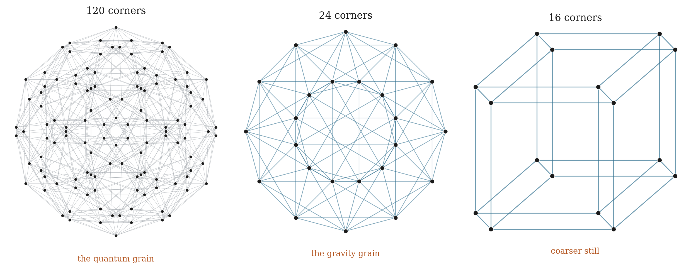
Here is the claim that makes the ladder more than a curiosity. Each rung is a domain of physics, and the domain is set by how coarsely that rung samples the world. The finest rung, the full 600-cell, is the realm of the quantum, of particles and their sharp spectral notes, the physics of the very small seen at the very finest grain. A coarser rung, the 24-cell, is the realm of gravity, the physics of how mass bends the arena, seen at a grain where the fine quantum detail has washed out and only the large-scale shape of space remains. Coarser still lies the physics of information and its blurring. The same world, sampled finely, is quantum mechanics; sampled coarsely, is gravity. They are not two theories of two things. They are one world at two resolutions, which is the relationship physics has always struggled to express, because in the usual telling quantum mechanics and gravity are foreign countries that refuse to share a border.
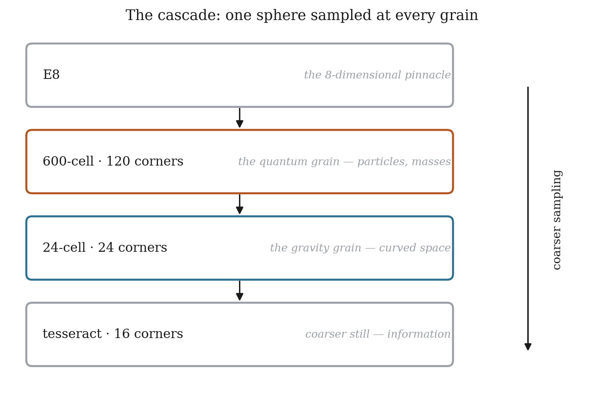
And the relationship rises above a loose analogy. It is a theorem, one I find lovely. The vibration patterns of the coarse rung, its notes, are the vibration patterns of the fine rung sampled on the shared corners, exactly. A pattern of vibration on the gravity crystal is a pattern of vibration on the quantum crystal, read off at the two dozen points the two crystals have in common. Climb between rungs and you change only how many points you are listening at, never what the world is. The coarse field is the fine field, sampled. That is what “one world, many resolutions” means, stated precisely enough to prove.
There is a feature of the ladder worth a moment before we ask what it gives us, because it echoes the theme that has run through the whole book, the theme of structures forced rather than chosen.
You might think the rungs of the cascade could have been any old sequence of crystals, picked for convenience. They could not. Which crystals can serve as rungs, and how coarse each one is allowed to be, is fixed by a piece of classical mathematics about how well a scatter of points can stand in for a whole sphere, a theory of what mathematicians call spherical designs. Each crystal can faithfully carry the world’s vibrations only up to a certain sharpness, set by how evenly its points are spread. Beyond that sharpness it cannot represent the finer detail at all. That cutoff, computed from pure geometry, fixes how far down each rung sits and where the ladder has to stop. Nobody built this cascade. It is the ladder the geometry permits, the same way the five Platonic solids are the solids three dimensions permit. Forced, again, all the way down.
So we have widened the picture considerably. The world is a ladder of crystals, one sphere sampled at every grain from the finest quantum sharpness down to the coarse blur where gravity lives, with each rung a domain of physics and the whole ladder fixed by geometry. Which leaves the question this chapter has been quietly building toward without answering. If each rung is a domain of physics, what law does each rung actually hand you? Does the gravity crystal, asked the right way, give back the law of gravity, the way the quantum crystal gave back the masses? That is where the framework cashes its largest promises, and it is where we turn next.
Behind the maths. That the coarse rungs are exactly the fine rung sampled on the shared corners — the intertwiner theorem — and that classical spherical-design theory fixes which crystals can be rungs and where the ladder has to stop, is verified by verify_rung_dimension_ladder.py (25 tests). The nested subsets in Figure 9.1 are genuine: the 24-cell really is twenty-four of the hundred and twenty corners, the tesseract sixteen of those.
We have a ladder of crystals, each a coarser sampling of the same sphere, each a domain of physics. That is a fine piece of architecture, but architecture is not yet physics. The test of the ladder is whether the rungs do any work, whether asking the coarse crystal the right question hands you back a law you recognise. This is the chapter where the framework cashes that promise further than I expected it to when I began the book, and it begins with the oldest law there is.
A word on the exact shape of the claim, because this is the chapter most likely to sound too final, and the precise version is strong enough that I do not need to oversell it. The algebra is solid and I will not hedge it: once you demand that the substrate cannot notice an observer’s choice of coordinates, only one law of motion is possible for the deformation field, and it is Einstein’s, in its weak-field form, factor of two and all. That uniqueness is a theorem, proven and checked by machine, and so are the conservation laws, the two gravitational-wave polarisations, and the electromagnetic case one rung down. Two things sit outside that theorem, and I will not let them hide inside it. The first is the identification itself: that this deformation field is the metric of the spacetime you actually live in. That is the book’s central bet, argued for but not proven. The second is the one piece of mathematics still owed, sharply identified: that the finite crystal’s cloud of corners becomes a strictly smooth spacetime in the limit. The completion from the weak-field law to the full nonlinear equations leans, for its last step, on a classical uniqueness theorem cited from the literature. So this is an effective derivation, in the precise sense that the derivation of sound from atoms is effective: the law is forced, the mechanism is real, and what remains is the rigour of the continuum limit, which I will name again plainly in the chapter on what we don’t know. Read what follows as a forced result carrying one honest rigour debt and one acknowledged identification, not as a hand-waving analogy, and not as a finished reconstruction of spacetime either.
If gravity is what the world looks like at a coarse rung, then the law of gravity should fall out of the substrate’s behaviour at that rung, the way the particle masses fell out of the fine rung’s spectrum. And the first and most basic law of gravity does exactly that. Take the coarse crystal, ask how a concentration of mass disturbs the arena around it, let the substrate respond in the way we’ve seen it respond all through this book, and what comes back, in the limit where the crystal is fine enough to look smooth, is the familiar law that the pull of gravity falls off as the square of the distance. Newton’s law, the one that holds the planets in their orbits, emerging from the coarse rung of the cascade as the substrate’s response to a lump of mass. That derivation is solid, and it sits in the column you can check.
Now Einstein. For most of the time I worked on this book, the full theory, with its curved spacetime and its black holes and its bending of time itself, was the largest gap in the programme, and earlier drafts of this chapter said so in plain words. Late in the writing it closed, and the way it closed is worth telling, because the obstacle turned out to be a case of mistaken identity.
For two years the derivation kept producing an object built from the substrate’s field, a little four-by-four table of numbers at every point, that looked for all the world like the warping of spacetime. Every attempt to make it behave like the warping failed, the failure had a name, and there was a file on record explaining why it could not be fixed. The resolution was to notice that the object was not the warping at all. It was the energy, the thing that causes the warping. We had been holding the source in our hands and trying to bend it into the shape of the response.
Once the two are told apart, the rest is forced, and forced is the right word. The warping itself shows up as the coarse, blurred deformation of the rendered scene, the same kind of collective pattern that a sound wave is in air: no single atom carries the wave, and no single vertex of the crystal carries the curvature. And here the observer earns its keep one more time. The coordinates an observer lays over the scene are bookkeeping, a surveyor’s grid, and the substrate cannot care how the grid is drawn. That single indifference is so restrictive that only one law of motion for the deformation field is mathematically possible, and that unique law is Einstein’s, in its weak-field form, factor of two and all. The famous doubling of light’s deflection that made Einstein a household name in 1919 falls out of it; I computed the bending from the derived field and got the four where Newton’s corpuscles give two. The clocks-run-slow factor of the gravitational well comes with it, tied to the same split between time and the three spatial directions that the quaternions gave us, with the time direction once again the special real axis that winds the clock. Strengthening all this from weak fields to the full equations rides on a chain of classical results from the sixties and seventies, mainstream theorems which say that a force of this kind, once it couples to energy at all, must couple to its own energy too and complete itself into general relativity, with the cosmological constant as the one number left free. That one free number happens to be the number the cosmology side of the programme had already pinned down, separately, to a tenth of a percent.
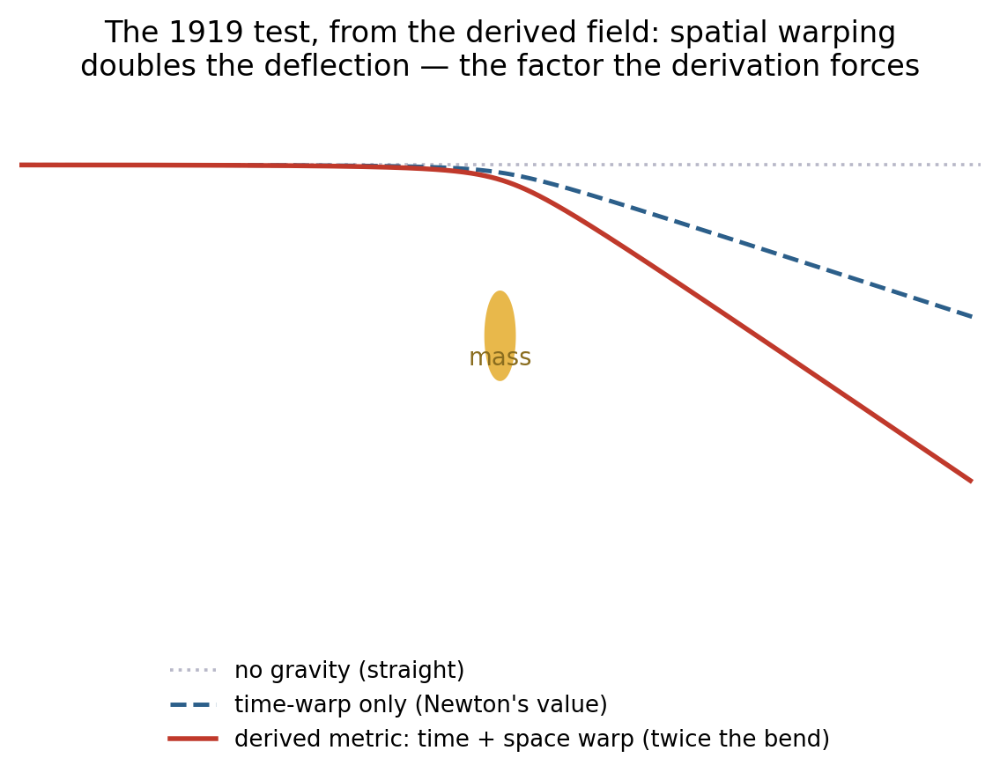
There is a quiet bonus that I find as satisfying as the equations themselves. The same substrate field whose slow ripples obey the quantum wave equation is the field whose energy bends the metric. So the mass that resists a push and the mass that pulls on other masses are two readings of one object. Their equality, the fact Einstein elevated to a principle and Galileo tested off a tower, stops being a coincidence to postulate and becomes a thing to check. We checked it, numerically, on a single simulated wavepacket: same number both ways. The grid-indifference argument also works one notch down the ladder of field types, where it forces the laws of electricity and magnetism in the same single stroke, so the two long-range forces of nature take the only two shapes they were allowed to take.
The honesty, because there is still some owed. The derivation lives at the level a physicist would call effective, the level at which sound is derived from atoms. For the spatial patterns that level turns out to be exact, since the crystal’s vibration shapes are the sphere’s own harmonics sampled at its corners, with the frequencies matching at a rate we can write down in closed form; what is not yet proven in the mathematician’s strict sense is the geometric statement that the corner cloud itself becomes the smooth round sphere in the limit. The completion to the full nonlinear equations, which an earlier draft of this paragraph admitted to borrowing whole from the classical literature, has since been re-derived in-house, a short argument whose two key identities are now checked by machine, with only the theorem that no rival completion exists still cited. Those reservations are real and I will restate them in the chapter on what we don’t know. But the shape of the situation has changed. Newton, solidly; Einstein’s machinery, derived, with the remaining work a matter of rigor rather than missing mechanism.
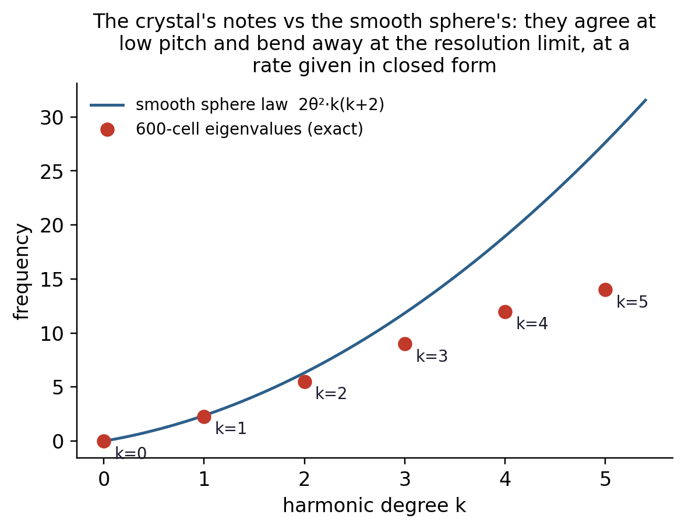
It is worth stopping to count what has happened, because in the space of a few chapters the same single object has quietly produced three of the four great pillars of physics, and produced them by the same move each time.
Take the substrate field at the fine grain and ask how its slow ripples evolve, and you get the equation of quantum mechanics, the one Schrödinger wrote down for the behaviour of matter waves. Take it one rung coarser and ask how its long-range disturbances travel, and the same field gives the equations of electricity and magnetism that Maxwell assembled in the nineteenth century. Take it at the coarse grain and ask how a concentration of energy deforms the rendered arena, and it gives the equations of gravity that Einstein found in 1915. One field, three theories that physics spent two centuries discovering separately and has struggled ever since to fit together, here falling out of a single structure at three settings of one dial.
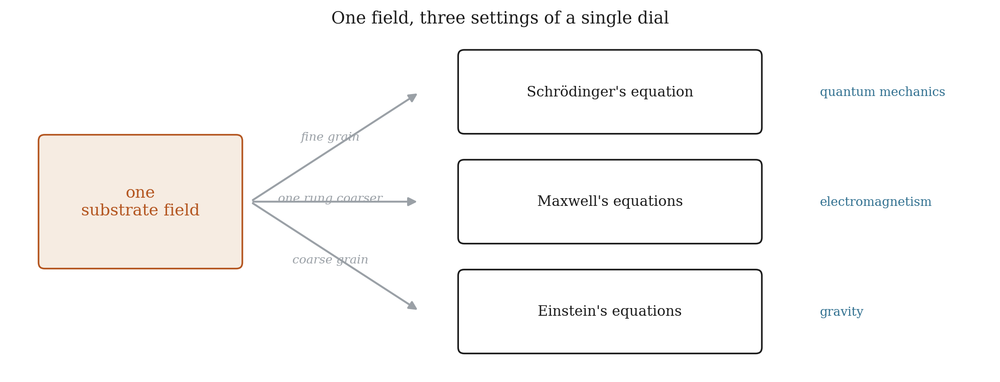
These three are no accident sharing a source by chance. Each is forced by the argument we just met, the one about the observer’s grid being mere bookkeeping that the substrate is not allowed to notice. That single indifference, applied to a field of one type, yields electromagnetism; applied to the deformation of the arena, yields gravity; and the slow envelope of the same field yields the quantum wave equation. The richest reward of carrying one field through all of it is that quantities physics had to assume were equal turn out to be the same quantity seen twice. The mass that resists being pushed and the mass that answers gravity’s pull are the clearest case, two readings of one field’s energy. Their equality, which Einstein raised to a principle and Galileo tested from a tower, becomes a theorem you can check rather than a coincidence you must swallow.
I want to be just as clear about what this is not. Three of the four great pillars now follow from the one field, though at the effective level this chapter has been careful to flag, and resting on the same identification of the field with the world, give or take the rigour debt named at the start. The fourth, the tangle of short-range forces inside the atomic nucleus that physicists organise under the name of the Standard Model, stands only half-built. Here too the last pass of work behind this book moved the line, and it is worth naming the groups exactly rather than hiding behind “a family of symmetries.” The symmetries of the octonions’ multiplication that fix the clock direction form the eight-dimensional group physicists call SU(3), the symmetry of the strong force that binds the nucleus. The two-handedness of quaternion multiplication, the fact that you can multiply on the left or on the right and get different answers, hands you the three-dimensional group SU(2), behind the weak force. And the single phase of the clock itself gives U(1), the one-dimensional symmetry of electromagnetism. SU(3), SU(2), and U(1): the exact gauge groups the Standard Model is built on, of the sizes nature uses and no others, and the tower stops there because the next number system after the octonions is broken in a way you can put your finger on, its multiplication admitting pairs of nonzero parts whose product is zero. That much is a result about the algebra, and it is forced. What is not forced, and I want no blur on this line, is the wiring on that skeleton: which particles carry which charges, why the weak force prefers one handedness over the other, how the three groups mesh into the precise pattern the world wears, and the masses of the heavy particles those forces govern. None of that is derived. The fourth pillar has gone from a blank space to a frame waiting for its wiring, real progress and still a long way from a finished room. I will set the unfinished part squarely on the table in the chapter on what we don’t know, where it belongs.
So three of the four pillars come off one field at three settings of a single dial, and the fourth has a forced skeleton and an open wiring. But I have been quietly suppressing something about the ladder those settings live on. Every rung I’ve described samples the same three-dimensional sphere, the arena we’ve lived in since Chapter 4. There is, though, one rung that does not. One rung where the arena itself changes, jumping from our familiar three-dimensional sphere to a stranger, larger one of seven dimensions, governed by an arithmetic even odder than the quaternions. And the reason that jump is possible, and the reason it stops there and goes no further, is one of the most rigid facts in all of mathematics. It is time to climb to the top of the ladder and look at the seventh dimension.
Behind the maths. The gravity chain — the stress tensor told apart from the metric, the Fierz–Pauli uniqueness, the factor of two in the light bending, the equivalence principle on a single wavepacket — is Paper LIII, Einstein’s Equations from Substrate Closure, checked by verify_gr_closure.py (39 tests). The Standard-Model gauge inventory is Paper LVI, and the residual upgrades (the in-house bootstrap, the beyond-Gaussian action, the explicit continuum rate) are Paper LVII, with verify_residual_closure.py (23 tests). One attribution to keep straight, corrected in review: the dark-energy figure ΩΛ = 0.6844 belongs to the separate hypersphere-cosmology release, while the programme’s own in-tree route, Paper L, gives two-thirds to within 2.7 percent.
Companion: https://github.com/vfd-org/crystal-and-clock-companion
The whole of arithmetic grows out of a short and strange ladder, and almost nobody is taught that the ladder has a top.
It starts with the ordinary numbers, the ones on a line, the reals. Add a perpendicular direction and a single square root of minus one and you get the complex numbers, the natural arithmetic of the plane, which we met when Hamilton was looking for the next rung. To climb again you have to double the dimension and, as Hamilton discovered on his bridge, add three square roots of minus one rather than one, giving the quaternions in four dimensions, the arithmetic of our own space. And you can climb once more, doubling again to eight dimensions, adding seven square roots of minus one, to reach a system called the octonions, discovered shortly after the quaternions and far less famous.
Each step up this ladder buys a new dimension and pays for it by giving something up. The complex numbers surrender the simple ordering of the line; you can’t say one complex number is straightforwardly bigger than another. The quaternions surrender commutativity; with Hamilton’s i, j, and k, the order in which you multiply matters, and i times j is not j times i but its negative. The octonions surrender even associativity, the rule you never think about that says it doesn’t matter how you bracket a string of multiplications; among octonions it does matter, and the freedom to ignore the brackets is gone. Each rung loses a comfort the rung below took for granted.
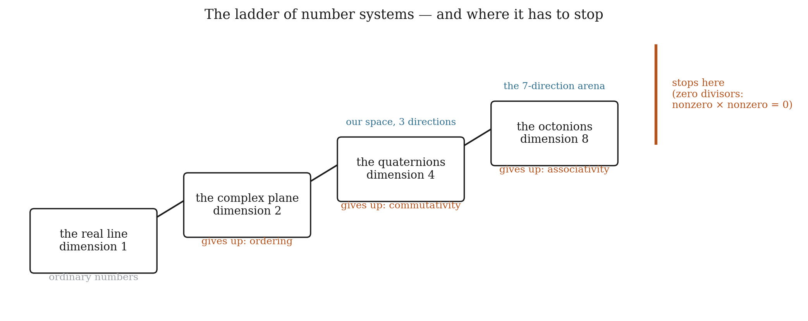
And then the ladder stops. There is no next rung. Try to double the octonions to a sixteen-dimensional number system and the thing falls apart in your hands: you get pairs of nonzero quantities that multiply together to give zero, which poisons the whole arithmetic, because a number system where things can vanish by multiplication is good for almost nothing. This is no failure of imagination, no gap waiting to be filled. It is a theorem, proved by Adolf Hurwitz, that there are four number systems of this well-behaved kind, in dimensions one, two, four, and eight, and never any more. The ladder has four rungs and a hard ceiling, and the ceiling is the octonions.
I’ve told you the arithmetic ladder because it secretly controls something we ran into back in Chapter 5, and the connection is the heart of this chapter.
Remember the trouble with combing a hairy ball, the cowlick that has to appear on any ordinary two-dimensional sphere, the reason most spheres cannot carry a smooth set of directions and so cannot host a world with axes in it. I told you then that only a rare handful of spheres can be combed, and that the three-dimensional one, our space, is among the lucky few. Now I can tell you what the lucky few are, and why, and the answer is the arithmetic ladder wearing a different hat. The spheres you can comb completely, the ones that hand every point a full set of perpendicular directions, are exactly the unit spheres of the four number systems. The circle, which is the unit complex numbers. The three-dimensional sphere, which is the unit quaternions, our arena. And the seven-dimensional sphere, which is the unit octonions. That is the entire list. A theorem of Frank Adams, one of the hardest-won results of twentieth-century topology, says there are no others, anywhere, in any dimension.
Sit with what that rules out. A renderable arena, a sphere that can give every observer a complete set of directions to lay a scene along, can exist only in dimension one, three, or seven. Not four. Not five. Not six. Not five hundred. The dimensions in between are forbidden, not by the framework, not by any physics, but by a fact about spheres that would be true in any possible world. Our three-dimensional space is one of three, and the only one of the three roomy enough to live in, since a circle and a line are too cramped to hold a world. The dimension of space was never going to be a free dial set anywhere it liked. The arithmetic ladder allowed almost nothing, and what it allowed, we got.
There is, though, that one other roomy option, the seven-dimensional sphere of the octonions, and it is not idle in this story. It is the top rung of the cascade.
Cast your mind back to the pinnacle E8, the eight-dimensional master crystal with its two hundred and forty nearest neighbours, the structure from which the whole ladder descends. Those two hundred and forty points are the unit octonions, sitting on the seven-dimensional sphere, and they form the highest rung of the cascade, an arena in their own right. Where our rungs sample the three-dimensional sphere with the quaternions, this one samples the seven-dimensional sphere with the octonions, and the same construction that builds a scene in three dimensions, the directions, the looking, the smoothing kernel, all of it carries over to seven, with the octonions handing each point not three perpendicular axes but seven. Seven directions for free, because the imaginary part of an octonion is seven-dimensional, just as the three of our world come from the three imaginary quaternions. And our arena and this one are close kin. The same golden-ratio fold that places the 600-cell inside E8, the relationship we met in Chapter 3, is the bridge from our three-dimensional arena up into the seven-dimensional one.
This is the honest answer to a question that hangs over every story like this one, the question of hidden dimensions and parallel worlds. Popular physics is full of universes with ten or eleven or twenty-six dimensions, of unseen realms folded too small to notice, of an endless multiverse of alternatives. This framework says something far more austere. There is exactly one arena above ours, the seven-dimensional octonionic one, reached by a single known fold, and beyond it nothing, because the arithmetic ladder has a ceiling and Adams’ theorem bolts the door. There is no haze of hidden spatial dimensions to hunt for, because the only dimensions a renderable arena can have are three and seven, and we already have one of each in the cascade. What lies “beyond” our three-dimensional world is the one arena upstairs, seven-dimensional and octonionic, together with a handful of structures that are content of the crystal rather than extra space, content that simply cannot be drawn as a scene. The door is not ajar onto infinity. It opens once, onto the seventh dimension, and then it closes.
What is solid here is, as usual, the mathematics, and it is some of the most solid in the book. Hurwitz’s four number systems, Adams’ theorem on which spheres can be combed, the fact that the three-sphere and the seven-sphere are the only roomy arenas, the placement of E8’s points on the octonionic sphere, all of this is classical and beyond dispute. The framework’s own contribution is to carry the machinery of looking up to the seven-dimensional arena, which it does, and the bet, flagged as ever, is that this seven-dimensional arena is a real higher level of the world and not just a pretty piece of algebra sitting above the physics. As bets go it is a disciplined one, hemmed in on every side by theorems about what is even possible, and the thing those theorems mostly do is forbid, which is exactly what you want from the laws behind a world, that they say no to almost everything.
We now have the full architecture in view. A ladder of arenas, one three-dimensional world sampled from the finest quantum grain down to the coarse blur of gravity, with a single seven-dimensional arena crowning it, and the whole structure forced, rung by rung and dimension by dimension, by geometry and arithmetic that could not have been otherwise. It is, I think, a remarkably complete skeleton for a universe.
And yet a skeleton is not a life. We have built the space of all the worlds the crystal could render, the whole architecture of the possible. We have not said which world actually happens. Of all the scenes the crystal could show, all the histories it could run, why this one, the particular world you are reading this in, and not one of the countless others the same geometry permits? That is the last great question, and it brings us, at last, to the matter of how a world is chosen, and to the place where life enters the story.
Behind the maths. That only the three- and seven-dimensional arenas can be rendered — Adams’s theorem, with the division-algebra tower stopping at the sedenions’ zero divisors — and that the octonionic seven-direction construction carries the looking, the frames and the kernel over from the quaternionic one, is verified by verify_ladder_completion.py (29 tests) alongside verify_rung_dimension_ladder.py, extending Paper LV.
Balance a marble on the very top of a smooth dome. It cannot stay. The least breath of air, the faintest tremor in the table, and it rolls, and it rolls in some particular direction, down one side rather than another. But look at the situation just before it moves. The dome is perfectly round. Every direction is as good as every other. There is nothing in the setup that prefers north over south or east over west. And yet the marble has to go somewhere; it cannot roll in all directions at once or sit forever at a point it cannot keep. So the perfect symmetry of the dome is broken, and what breaks it is the particular history of that particular marble, the stray nudge that happened to come from one side. The law of domes treats every direction alike; it can break nothing. The law gives you the dome. The accident gives you the direction.
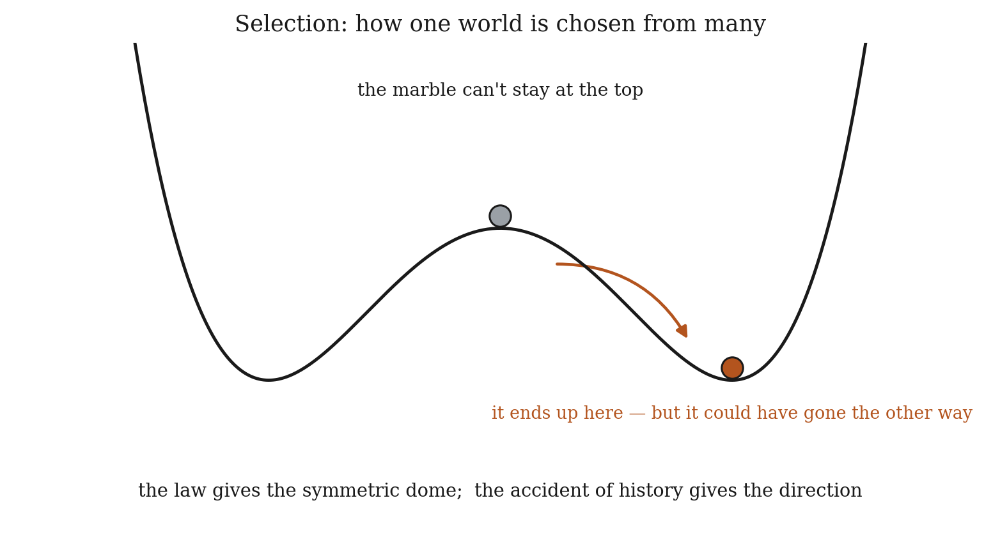
This little drama is one of the deepest patterns in physics, and it is the one we need to finish the world. We have spent the whole book building the space of what the crystal can do, the arena, the directions, the looking, the time, the ladder. What we have not done is pick out the one actual world, the specific history you are living through rather than one of the countless others the same geometry would allow. The crystal permits an enormous family of possible scenes, all of them consistent, all of them legal. Which one happens? And why this one?
Here is the difficulty, stated cleanly, and it is the marble on the dome wearing formal clothes.
The crystal is symmetric, gorgeously so, and that symmetry is what makes it unable to choose. Suppose the world were selected by some single grand law, one rule applied to the whole substrate that picks out the real history from among the possible ones. For that rule to be a law of the crystal, it would have to respect the crystal’s symmetries, treating all the equivalent options evenhandedly, playing no favourites the geometry doesn’t already have. But options related by a symmetry are, to such a law, identical. A rule that honours the symmetry cannot prefer one of them over its mirror image, any more than the round dome can prefer north. So a single symmetric law, however clever, leaves the choice undetermined. It narrows the field, perhaps, but it cannot get you down to one. The very perfection that lets the crystal know the dimension of space forbids it from selecting a world by law alone.
I find this clarifying, because it tells you what kind of thing the answer has to be. If no symmetric law can make the final choice, then the choice must be made by something that breaks the symmetry, and the natural symmetry-breaker is history. The breaker is the accumulated record of what has actually happened, piling up tick by tick on the changing surface of the substrate, the moving foreground from the chapter on looking. Each event that occurs is a nudge to the marble. One event breaks a little of the symmetry. A long history of them breaks a great deal. And the framework’s claim, which can be checked on the actual crystal and has been, is that as the history accumulates, the world is pinned down more and more tightly. The run of events narrows the countless possible worlds to the single one that is actually unfolding. No global rule selects your world. The whole of its history does, and nothing less would be enough.
This is worth holding onto, because it inverts a habit of thought. We tend to imagine that if only we knew the final law of physics, the master equation, we would know why things are as they are. The lesson of the dome is that the master equation, because it would be symmetric, could never tell you which way the marble rolled. For that you need the story, the actual sequence, the history that did the breaking. The world you are in is not written by a law. It is written by everything that has happened in it.
It is time, having put it off for ten chapters, to say where life sits in this picture, and I am going to be careful here, more careful than anywhere else in the book, because this is the territory where loose language does the most damage.
Cast your mind back to the ladder of closure from Chapter 2, the gradient that ran from the bare fact of a distinction, up through relations, up through self-sustaining loops like the whirlpool, and on toward loops elaborate enough to hold stable patterns and model their own surroundings. Life is a name for the high reaches of that ladder. A living thing is a pattern of extraordinary closure, a self-maintaining loop so intricate that it repairs itself, copies itself, and holds its form against a world forever trying to wash it away. It is the whirlpool’s distant, ferociously complicated cousin, the same trick of consistency-with-its-own-continuation carried to a height where the pattern can begin to keep a model of itself inside itself. Nothing mystical is being claimed by placing life on this ladder. Life is what very high closure looks like, and the ladder says there is a continuum from the simplest persisting pattern up to the most elaborate, with no sharp line where existence stops and life begins, only an increasing depth of self-maintenance.
There is a rhyme here worth noticing, though I want to be careful not to oversell it into something it is not. The crystal is built on icosahedral, golden proportions, and some of the forms life favours share them. The protein shells of many viruses are icosahedral, assembled from identical pieces into a symmetric cage. The spiral of seeds in a sunflower, the leaves around a stem, the chambers of a shell, fall into golden proportions. It is tempting to read these as the crystal’s own geometry surfacing in biology, and I feel the pull of it. But honesty requires the flat statement that biology already explains them with no help from this framework at all: an icosahedral shell is the most economical way to wrap a genome in identical parts, and golden-ratio packing is simply the tightest way to fit seeds or leaves on without gaps. The framework does not derive these forms, and I am not offering them as evidence for it. I raise them only because the same motifs the crystal is built from are the ones plain efficiency drives matter toward anyway, and you are entitled to find that rhyme suggestive or to find it a coincidence. I lean on it for nothing.
And the honest counterweight, which is substantial. That the geometry of life’s forms echoes the crystal is a real observation. What is not done, what is frankly wide open, is the dynamics of life, the actual law of how a living pattern copies and sustains itself, derived from the substrate. The framework does not claim life’s shapes as a derivation, as I have just said; ordinary efficiency accounts for those. And it cannot yet say, from first principles, how the living loop runs. That is a large unfinished thing, and I put it on the table beside the missing heavy particles, in the same spirit, as frontier rather than result.
There is a final reticence I owe you, and it is the most important sentence in this chapter, so I will give it a paragraph of its own and not soften it.
The framework builds scenes. It selects, through accumulated history, a single world from the space of the possible. It reaches, up the ladder of closure, to patterns elaborate enough to model themselves. What it does not do, anywhere, is explain why there should be something it is like to be one of those patterns. The gap between a self-modelling loop, however intricate, and an inner life that is actually lived, felt from within, is not crossed in this book, and I am not going to pretend it is. You will have noticed that I have never once said the crystal is aware, or that the universe is conscious, or that the patterns we have been describing experience anything at all. That restraint is deliberate and it is permanent. The scene the framework constructs has the architecture of a perceived world. Whether any of it is perceived, in the sense that your reading of this page is perceived from somewhere on the inside, is a question I regard as genuinely unanswered, by this framework and by every other I know of. I would rather hand you that honest blank than a confident sentence I could not cash.
So here is where we have arrived. A world forced into shape by geometry, three-dimensional and directioned, looked at and unfolding in waves of time, sampled at every grain from the quantum to the gravitational, crowned by a seventh-dimensional arena, and selected, from the vast space of the possible, by the whole accumulated weight of its own history. And on the high rungs of its ladder, patterns complicated enough to be alive, now and then echoing the same golden forms the crystal is built from. It is, very nearly, a complete account of a universe, assembled from a single shape with nothing carried in from outside.
Very nearly. The honest word is nearly, and a book that has insisted on the difference between the checkable and the speculative owes you a clear-eyed accounting of everything still missing before it allows itself any kind of ending. So let me stop building, and turn, deliberately, to what we do not know.
Behind the maths. Selection by accumulated history works on the crystal as a Lyapunov descent in the worked toy model, verified by verify_narrative_closure.py (28 tests). But a single universal law of selection is named open, not derived — it sits in the ledger’s open items, and the next chapter sets it squarely on the table. This box points at what is shown; the honesty is in not claiming more.
A friend who reviews theories for a living once told me that the fastest way to judge one is to skip to where it admits what it can’t do. A theory with no honest list of failures is either trivial or lying, because any proposal bold enough to matter will have a frontier, a ragged edge where it runs out, and the character of a theory shows in how it treats that edge. So this is the chapter where I take you to the edge of everything I’ve built and walk you along it, and I want you to read it not as an apology but as the most truthful part of the book. The gaps are real. Some of them are deep. Naming them plainly is the price of having asked you to take the rest seriously.
I will sort them, roughly, from the merely unfinished to the genuinely hard.
In the first category are the things the framework ought to be able to do and simply has not done yet, the ordinary debts of a young programme. The largest is the one Chapter 10 left on the table. Three of the four great pillars of physics now come from the single substrate field, the quantum wave equation and electromagnetism and gravity, each forced by the same indifference to an observer’s choice of coordinates. The fourth does not come. The Standard Model, the organising scheme of the short-range forces inside the atomic nucleus, turns on a particular bundle of internal symmetries that fixes how many such forces there are and how each particle is charged under them. The shape of that bundle, three symmetry groups of particular sizes and no others, now falls out of the crystal’s two number systems, the quaternions and the octonions, in the final pass of work behind this book; the wiring does not. Which particles carry which charges, why the weak force prefers one handedness, how the three groups mesh into the precise pattern nature uses, none of that is derived. Neither is the heavy matter those forces govern. The spectrum gives a ladder of masses, several of the lighter particles land on it, and the proton’s size comes out to a fraction of a percent, but the heavy quarks, the carriers of the weak force, the W and the Z and the Higgs, and the neutrinos are missing or barely placed. None of this clashes with any experiment; these are absences, not contradictions, large stretches of the known world the framework has yet to reach. Until it reaches them the claim to be a complete theory of matter is a promissory note, not a paid debt. I see no reason in principle the gaps cannot close. I also cannot show you that they will.
Gravity sat at the top of this category through every draft of this book but the last. Newton’s law, the inverse square that holds the planets, has come out of the coarse rung cleanly for some time. Einstein’s general relativity, the curved spacetime and the black holes and the bending of time, spent two years as the programme’s largest single gap, blocked by an obstacle that had a name and a file documenting why it would not move. Chapter 10 tells how it closed: the object we kept trying to read as the warping of spacetime was the energy that sources the warping, and once the two were told apart, the substrate’s indifference to an observer’s choice of coordinates forced Einstein’s equations as the only law the deformation field could obey, weak field first, the full equations by a chain of classical theorems. What remains is real and belongs on this list, but it has changed kind: it is rigor now rather than mechanism. The derivation stands at the level at which physicists derive sound from atoms; the part of the strict limit that concerns the fields themselves is now a theorem with explicit error rates, the part that concerns the smoothness of the underlying arena is not, and the nonlinear completion, once borrowed whole from the classical literature, has been re-derived in-house with its key identities machine-checked, leaving only the no-rival-completion theorem cited. One debt even moved during the writing of this chapter: the raw strength of gravity, Newton’s constant itself, follows to two parts in ten thousand from the muon’s position on the mass ladder, provided that position is structural rather than lucky, a condition worth exactly as much as that proviso. A mathematician is entitled to withhold judgment until the last limit is a theorem. A physicist, I think, would say the joint that was the skeleton’s weakest now bears weight.
There is a scatter of smaller technical debts too, the kind every working theory carries, places where a result is proven in a clean special case and the general version is sketched but not nailed. Since the last pass of work narrowed them to a short and definite list, it is worth naming them rather than waving at them. There were four, and three have closed. The first was whether the rendering kernel’s bootstrap, the self-consistency step that lets the substrate’s response close on itself, could be carried out inside the framework rather than borrowed from textbook gravity; it now is, with the argument written out and its two key identities checked by machine. The second was whether the substrate’s statistics, when you go beyond the simplest bell-curve approximation, still give the law the derivation needs; the corrected, beyond-Gaussian version was worked out and it does. The third was the rate at which the discrete crystal’s behaviour approaches the smooth law as you refine it; that rate is now written down explicitly, an error that shrinks at a stated speed rather than a hand-wave that it shrinks at all. The fourth has not closed, and it is the one Chapter 10 already flagged: the strict statement that the crystal’s cloud of corners becomes a genuinely smooth round sphere in the limit, a question of arena geometry that the mathematicians call a Gromov–Hausdorff limit, still stands open. Three of four paid, one outstanding and clearly marked. None of the four is load-bearing for the picture as a whole; they are the frontier’s gravel rather than its cliffs.
Then there are two problems that are not merely unfinished but deep, and I want to give them their full weight, because a reader who came this far deserves to know where the real walls are.
The first is selection. I told you in the last chapter that no single symmetric law can choose the actual world from the space of the possible, and that the choosing must be done by accumulated history breaking the symmetry. That mechanism is real and it works on the crystal. But there is a further question I slid past, and it is hard. Is there a single, canonical account of how the history does its choosing, one universal principle of selection that the framework can write down and call its own? Or is the selection just whatever happens to happen, with no deeper law beneath it? The framework has strong hints, several different lines of its own reasoning that seem to be circling the same missing principle from different directions, which is the kind of convergence that usually means something real is there to be found. But the principle itself, the master account of how a world gets chosen, is not in hand. It is named, it is circled, and it is open.
The second is the one I flagged most solemnly last chapter, and it is the deepest of all. The framework constructs a scene with the full architecture of a perceived world, a fixed background and a moving foreground laid out in three dimensions around a point of view. It says nothing about why any of that should be felt, why there should be something it is like to be the pattern doing the perceiving. This is the problem philosophers call consciousness or experience, and I want to be exact about the framework’s relationship to it. The framework does not solve it. The framework does not claim to solve it. What the framework offers is a precise account of the structure of a viewpoint, the geometry of a scene rendered from a location, and it stops cleanly at the edge of structure, declining to say whether structure is all there is or whether something further, the felt inside of it, has to be added. I regard that as the honest place to stop, and also as a confession that the hardest question about minds is no more answered here than anywhere else. If you came to this book hoping the crystal would explain why your experience feels like something, I have to send you away unsatisfied, and I would distrust any version of this story that sent you away satisfied.
It would be a strange book that spent a chapter on its failures without setting them against what it has, so I will do that, briefly and without inflation, because the gaps mean something different depending on what they are gaps in.
What is solid is the spine. That the crystal is forced into existence by symmetry alone, with nothing chosen, is mathematics. That its spectrum carries the signature of three-dimensional space, three independent ways, with no dimensional input, is mathematics you could check tonight. That the three-sphere is combable and hands every point three perpendicular directions, that only the dimensions three and seven can host a renderable arena at all, that the crystal contains within its own symmetry a mirror that reverses its clock and forces time to run in waves, these are checkable facts about a definite object, and they are the load-bearing beams of the whole structure. The looking, the scene, the kernel that does the rendering, the split into a fixed background and a moving foreground, are built and largely verified. Newton’s gravity comes out, and as of the final draft Einstein’s machinery follows it, carrying the rigor debt recorded above. One fixed prediction has been laid against real experimental data from two collaborations and survived, undecided but un-refuted. None of that is speculation, and none of it goes away because the harder problems remain open.
So the honest shape of the thing is a strong, verified core with a frontier of real and in places deep open problems around it, which is, when you say it plainly, what an ambitious young theory looks like at this stage of its life. The core is not waiting on the frontier. The dimension of space is read off the spectrum whether or not we ever derive the Higgs mass. The time-mirror forces waves whether or not we ever solve the problem of experience. A reader is entitled to weigh the core and the frontier separately, to find the core beautiful and the frontier daunting, and to suspend judgment on the whole until more of the frontier is closed. That is exactly the judgment I would ask for. Not belief. Attention.
Which leaves one question, the one any honest theory has to be able to answer and the one I have been saving for the end. Given the open problems, given that this is a bet and not a proof, why might it be true at all, and just as importantly, what would show that it isn’t? A proposal that could not be wrong would not be worth the paper, and a proposal that might be right should be able to tell you exactly how to kill it. Let me close the book by telling you both.
Behind the maths. The frontier is documented, not hidden. The hardened re-tests of the gap closures, run against genuine wrong-answer controls after hostile review, are verify_gap_strengthening.py (22 tests). The one open continuum-geometry problem — the Gromov–Hausdorff limit of the arena — is the subject of Paper XL, the open programme. Every open item in this chapter is graded in the claim-status ledger, and the ten unedited referee reports that hardened these papers ship in the companion’s reviews folder.
Companion: https://github.com/vfd-org/crystal-and-clock-companion
Let me make the case, and then tell you how to destroy it, because a proposal worth your time has to do both.
The case begins with a single word that has run quietly under every chapter: forced. Go back through what we built and notice how little of it was ever chosen. There are five Platonic solids and not six, and no one decided that; the geometry of three dimensions decided it. There are six regular shapes in four dimensions, and the 600-cell is the most symmetric of them, and that was forced too. E8 stands where it stands because eight dimensions permit it and nobody arranged the permission. The dimension of space comes out of the crystal’s spectrum without anyone feeding in a dimension. The three perpendicular directions come from the three imaginary quaternions, and there are three of those because four-dimensional arithmetic allows no other count. A renderable arena can have dimension three or seven and nothing else, and that is a theorem older than the framework and indifferent to it. The mirror that makes time run in waves is multiplication by a number that was already sitting in the structure for an unrelated reason. The family of internal symmetry groups that the forces are built from, three of them and no more, comes from the crystal’s two number systems, the quaternions and the octonions, and stops where those number systems give out. At step after step, the framework had no freedom. It took a forced shape and read off what the shape forced.
That matters because a theory with freedom is a theory with places to hide. Give me enough adjustable knobs and I can fit an elephant, and make him wiggle his trunk. The usual worry about a grand unifying story is that it has too many knobs, that its successes are bought by quiet tuning behind the curtain. The striking thing about this framework, the thing that first made me unable to put it down, is how few knobs it has. The crystal is what it is. You cannot adjust the 600-cell to taste; it is the 600-cell or it is nothing. So when its bare structure hands back the dimension of space, the count of spatial directions, the wave nature of time, there was no tuning available to make those come out right. They came out right, or they would have come out wrong, and there was nothing in between to lean on.
Set beside the forcing is an economy that is hard to fake. One shape, read in different ways, gives the dimension of space and the directions in it and the flow of time and a ladder of masses and the sizes of particles and the strength of gravity’s pull and the symmetry groups that organise its forces. Not a separate mechanism for each, bolted together into a machine with too many parts, but one object interrogated from several angles. A filing cabinet of unrelated explanations can be made to hold anything. A single structure that keeps answering different questions with the same few moves is doing something a filing cabinet cannot.
And there is the matter of where the foundation sits. Most grand theories rest their weight on their interpretation, on the story they tell about what it all means, and the story is exactly the part you cannot check. This one is built the other way up. Its foundation, the dimension of space read from the spectrum, is not a story at all. It is a fact about a finite object, the kind of fact that is true or false with nothing in between, the kind you could confirm yourself this evening and that I have confirmed more times than I can count because it kept seeming too good. A framework whose deepest claim is a checkable fact is a different animal from one whose deepest claim is a beautiful sentence. You do not have to believe the foundation. You can compute it.
Now the other half, the half that separates a theory from a faith, because the surest sign that something is worth taking seriously is that it tells you exactly how it could be wrong.
Start with the result the whole book leans on. The crystal’s spectrum did not have to carry the signature of three-dimensional space. It is a particular finite object with a particular set of vibrations, and those vibrations could have come in families of any sizes at all. Had they come in the wrong pattern, the odd numbers of a two-dimensional sphere, say, or some sequence belonging to no sphere of any dimension, the framework would have been dead on the spot, before it ever reached physics, and I would not have written this book. The foundation was a genuine risk. It paid off, but it could have failed, and a foundation that could have failed and didn’t is worth more than a thousand that never staked anything.
I should be precise about what kind of evidence that is, because the distinction is one sceptics rightly insist on. The spectrum result is a retrodiction: the dimension of space was already known when the crystal handed it back. Its force is not that it predicted something new, but that the framework had no freedom to make it come out right, so a structure built for entirely unrelated reasons, taking a real risk and landing on three, is strong support of the non-ad-hoc kind. What it is not is a live test. That verdict is in, and no future measurement can overturn it. For the tests the future can still decide, you have to look to the frontier, where the staking is not yet finished.
The same knife cuts at the frontier, where the staking is still live. There is that one fixed prediction laid against real data, the curve the crystal draws for a particular particle-physics anomaly, with no freedom in its shape. Right now the data cannot decide between that curve and a conventional account; the verdict is a tie. But these experiments are not finished. They will keep gathering data, the measurements will sharpen, and the tie will break, one way or the other. If it breaks against the crystal’s fixed curve, that is a real wound, an honest piece of evidence that the geometry got something wrong, and I am on record now, before the data arrives, that the curve has no room to dodge. The same goes for every number still to come. When the framework finally derives the mass of a heavy quark or the strength of the weak force, that number will meet a measured value known to many decimal places, and it will match or it won’t, and there is no knob to turn if it won’t.
One such number is already on the table, and it is the sharpest stake the framework has driven so far. Newton’s constant, the single number that says how feebly mass pulls on mass, now follows, on one condition I will state in a moment, from the position of one particle, the muon, on the crystal’s ladder of masses, and the prediction lands within two parts in ten thousand of the measured value. I want to be careful about how much that is worth, because it is the kind of result that is easy to oversell. It holds only if the muon’s rung on the ladder is a structural fact rather than a lucky landing; the odds against a coincidence are around one in two hundred, which is suggestive without being settled. And the agreement is not flawless. There is a genuine gap of two parts in ten thousand against a constant pinned down far more tightly than that, so the gap is real, a small physical effect the framework will eventually have to account for. That is not a result to bank as a victory. For a young theory it is something better: a falsifiable number, said out loud, that could have missed by a mile and instead missed by a hair, with the size of the miss now itself a thing to explain.
To put the live stakes in one place, here are the tests still genuinely open, each able to go against the framework rather than for it. The B-meson anomaly curve, as the experiments sharpen and the tie breaks. Any heavy-particle mass the framework derives from first principles, met against a value already measured to many decimals. The strengths of the weak and strong couplings, once derived. The two-parts-in-ten-thousand residual in the gravitational constant, which a correct theory must eventually account for. And the Standard Model wiring, the charges and the handedness and the mixing, which the framework does not yet produce and will have to. Any one of these coming out wrong is a real wound, not a thing to be explained away. That is the list I am staking the programme on, and I am writing it down before the answers are in.
There is something I can offer here that most books of this kind cannot, and it is the thing I am most insistent about. Every checkable claim in this story has code behind it. The spectrum, the square multiplicities, the directions on the sphere, the kernel that does the looking, the mirror that reverses the clock, the law of gravity at the coarse rung, the uniqueness argument that forces Einstein’s equations, the inventory of internal symmetry groups read off the quaternions and the octonions, all of it is computed by programs that exist, that ran, and that anyone with the inclination can run again. I have tried to write this book so that you never have to take my word. Where I told you the crystal knows the dimension of space, there is a calculation you can perform that either produces the number three or does not. The framework’s claims are not safe behind a wall of interpretation where they can never be touched. They are out in the open, computable, falsifiable, waiting to be checked by anyone who suspects I have fooled myself. That openness is not a courtesy. It is the whole difference between a research programme and a belief.
We began with a single observation, that nobody has ever seen the universe from the outside, and I want to end by coming back to it, because the book has changed what it means.
When I first put that line down, it sounded like a limitation, a wall we are stuck behind, the sad fact that we can never get the God’s-eye view and see the whole thing plain. I no longer read it that way. If the framework is even partly right, the view from the outside is not merely unavailable to us; it does not exist, because there is no outside. The universe is a single self-consistent shape that holds itself together with nothing around it and nothing underneath, sitting in no larger space we are forbidden to visit, and the inside is the only place there is. The view from within is not a poor substitute for some better view we are denied. It is the only view, the real one, the one the shape has of itself.
And that is what a world turns out to be, in this telling. A crystal forced into being by the bare demand that it be consistent with itself, needing no stuff and no stage and no outside. A crystal that already knows, in its silent structure, that space has three dimensions and which three directions you may turn in. A crystal that winds its own clock with an internal mirror and so sets time running in waves rather than letting it bleed away. A crystal that, looked at from a point within it, unfolds into a scene, a steady world with events moving across it, selected from all the worlds it might have shown by the whole accumulated weight of its own history. You are not standing outside that crystal studying it. You are a pattern within it, high on its ladder of closure, reading a description of the very shape you are made of, in a scene the shape is rendering from the place where you happen to be.
I cannot prove that to you. I have been careful, the whole way, to say so wherever it was true, and there is a great deal still open, the hardest of it the question of why any of this should be felt from the inside at all. The honest state of the thing is a strong and checkable core, a frontier of real unknowns, and a bet that the one connects to the other. But I will say this much without hedging, because it is the part I am sure of. The crystal is real, its symmetries are real, and the facts it hands back about the dimension and directions of space and the wave-nature of time are real and were forced and could have come out otherwise and did not. Whatever else is true, the world has, sitting at its foundation, a shape this precise and this constrained, ringing with the number three.
The crystal and the clock. A shape that holds itself together, and the time it makes by looking at its own reflection. If there is a more honest place to begin an account of why there is a world, and why it is this one, I have not found it. The rest, the closing of the frontier, the deriving of the masses, the long assault on the question of what it is like to be a pattern that can ask, is the work still to come. It is a good place to be standing. The view from inside has never looked sharper.
Behind the maths. Every checkable claim in this book has code behind it, and you do not have to take my word for any of it. The complete battery — eight suites, more than two hundred tests, each with a built-in wrong-answer control — reproduces from a single command: clone the companion and run bash run_all_verifications.sh. The six companion papers, the claim-status ledger, the verification manifest, and the ten unedited referee reports are all in the same place. Break it if you can. That is the whole point.
Companion: https://github.com/vfd-org/crystal-and-clock-companion
The point of the first column, the checkable one, is that you do not have to take my word for it. This appendix tells you where the calculations live, so that the central claims of the book can be confirmed or refuted by anyone willing to run a short program. None of it requires special equipment, only a computer and the patience to read code that other people wrote.
All of it runs from one small data file, the 600-cell’s list of corners and connections, bundled with the code. Everything else, including the octonions, is built up from first principles inside the scripts. The whole battery is eight suites and a little over two hundred separate checks, each one written with a deliberate wrong answer built in alongside the right one, so that a script which passed by accident would be caught failing its own control. The counts below are the numbers each suite printed at the time of writing.
The claims and where to test them:
That the crystal is forced into being, and reconstructs its own geometry from bare connections (Chapter 3 and Chapter 4). That the hundred-and-twenty-member group is the unique survivor of the perfect-and-maximal filter, that its multiplication table reproduces the diagram of E8, and that the bare table of which corner touches which rebuilds the sphere and every angle of the crystal, are checked in the crystal-forcing suite, fourteen checks in all.
That the crystal’s spectrum carries the signature of three-dimensional space (Chapter 4). The 600-cell is built from its bare list of connections, the operation that governs vibration is applied, and the families of vibration are read off. They come in sizes one, four, nine, sixteen, twenty-five, thirty-six, the perfect squares of a three-dimensional sphere, with the actual frequencies matching the sphere’s predicted frequencies to machine precision. This is the load-bearing result of the book, and it is checked in the verification script for the rendering layer, which confirms the square multiplicities, the exact frequency formula, and the recovery of dimension three by an independent counting argument. The figure in Chapter 4 was drawn directly from this computation and can be regenerated from the figure script that accompanies it.
That the three-sphere hands every point three perpendicular directions (Chapter 5), and that the canonical frame of directions is orthonormal at every one of the crystal’s corners, is confirmed in the same rendering-layer script, which builds the frame at all hundred and twenty corners and checks it.
That the crystal contains a mirror reversing its own clock, and that the mirror is multiplication by i (Chapter 7), is checked in the same place: the script finds the clock-reversing elements explicitly and confirms that they conjugate the crystal’s tick to its reverse.
That the cascade is one world at many resolutions (Chapter 9), with the coarse rungs’ vibrations equal to the fine rung’s vibrations sampled on the shared corners, and the resolution of each rung fixed by spherical-design theory, is checked in the rung-dimension-ladder script.
That the unique law of the metric field is Einstein’s, and that the substrate supplies its premises (Chapter 10). The verification suite for the gravity chain confirms the uniqueness numerically by a random-sampling scan, which is a check on the analytic theorem proved in the paper rather than the proof itself (it finds one surviving direction out of six, the Fierz–Pauli ratios, mass terms killed, two polarisations), checks the exact conservation laws of the substrate field on the actual 600-cell graph, solves the weak-field equations on a grid and confirms the factor of two and the isotropic spatial warping, traces light rays through the solved metric and recovers the doubled 1919 deflection against a scalar control that gives half, and measures the inertial and gravitating mass of one simulated wavepacket and finds them equal. Thirty-nine checks, each built to be able to fail. The full technical derivation is Paper LIII of the programme, Einstein’s Equations from Substrate Closure, with the working notes and the honest record of the failed earlier construction preserved alongside it.
That the framework’s smaller technical debts have largely been paid (Chapter 13). The residual-closure suite checks the four items named in that chapter: the in-house bootstrap, the beyond-Gaussian statistics, the explicit rate at which the discrete approaches the smooth, and the structure of the internal symmetry groups, with the one arena-geometry limit left open and recorded as such. Twenty-three checks, and they lean on the wider mathematical libraries the chapter’s notes name.
That a single fixed curve, derived from the geometry, gives a consistent account of a real particle-physics anomaly (Chapter 8) is documented, with full statistical honesty including the tie and the recorded methodological wobble, in the b-anomaly materials of the wider programme.
All of this lives in one public place, the book’s companion repository, at https://github.com/vfd-org/crystal-and-clock-companion. It holds the six technical papers, the verification suites, the data file, the claim-status ledger, the verification manifest, and the full, unedited referee reports that hardened the papers. The single command bash run_all_verifications.sh, run after cloning, reproduces every suite and prints its pass count. Throughout the book, the boxes marked Behind the maths at the end of each chapter point to the particular paper and suite that stand behind that chapter, so you can go straight from any claim to the code that checks it. They ran, they pass, and they are there to be broken by anyone who suspects otherwise. That is the whole point.
For the record, so that “run it yourself” is a real instruction and not a gesture: the suites need only stock Python 3.8 or later with NumPy, and SciPy and SymPy for two of them, and run from seconds to a few minutes each on an ordinary laptop. Every suite is deterministic, with fixed random seeds, and prints a line of the form SUMMARY: N PASS, 0 FAIL; any other line is a failure of the claim it tests, and the manifest records the exact pass count each suite should print, pinned to the repository commit it was written against. If your numbers differ from the manifest’s, something is wrong, and I would want to know.
The mathematics this book leans on divides into two kinds, and it matters which is which. The first kind is classical and settled, owing nothing to the framework: the five Platonic solids, the six regular four-dimensional shapes and the 600-cell among them, the lattice E8, the quaternions and octonions, the theorems of Hurwitz and Adams on which number systems and which spheres can exist, the spherical harmonics of the various spheres. All of this is standard, can be found in textbooks, and would be true if the framework were wrong. I have used it freely and tried always to flag it as common property rather than the framework’s own.
The second kind is the framework’s own contribution: the reading of the 600-cell as the substrate of the physical world, the construction of looking and the rendering kernel, the derivation of wave-like time from the inner mirror, the cascade of rungs as resolutions of one arena, the derivation of Einstein’s equations from the substrate’s indifference to coordinates (resting partly on the classical spin-2 uniqueness and bootstrap theorems, which belong to the first kind), the account of selection by accumulated history. These are set out, with their proofs and their open problems and their honest verification, in the technical documents of the programme, of which this book is the plain-language telling.
All through this book I have asked you to keep two columns apart: the things that are checkable now, and the things that are still a bet. This table is those two columns made explicit, the whole spine of the book on a single page, each claim marked with how strong it actually is and where you can go to test it. I would rather hand you this than ask you to take my grading on trust.
The grades, strongest first, mean exactly this:
What a grade of Theorem covers, and what it does not. This matters enough to state once and plainly. A grade of Theorem means the statement is proven about the crystal, the mathematical object, and checked by machine. It does not, on its own, mean the corresponding fact about the physical world is proven, because reading the crystal’s properties as facts about reality rests in addition on the book’s one central bet: that the crystal is the substrate the world is built from. That bet is not graded here. It is the interpretation the whole book exists to argue for, not a thing I can prove. So when the table says “time runs in waves, Theorem,” it means this: it is proven that the crystal’s own dynamics are wave-like. That this is the time you live in is the identification, the bet, not the theorem. Hold the two apart for every row below, and the grades will not mislead you.
| What is claimed | Grade | Where it lands | Chapter |
|---|---|---|---|
| The crystal is forced: the 120-point group is the unique perfect, maximal one, and it is the 600-cell | Theorem | exact | 3 |
| The crystal’s points are its own symmetries | Theorem | exact | 3 |
| The crystal’s pattern of vibration families is the E8 diagram, from the multiplication table alone | Theorem | exact | 3 |
| Three dimensions read off the spectrum, with no dimension put in | Theorem | the perfect squares, to machine precision | 4 |
| The bare table of connections rebuilds the sphere, every angle, and the golden ratio | Theorem | sphere to 15 decimals | 4 |
| Every point gets three perpendicular directions for free | Theorem | exact | 5 |
| The rendering operation is unique (the crystal’s own response), given four stated demands | Theorem | unique under K1–K4 | 6 |
| The crystal’s dynamics are second-order, wave-like not diffusive, forced by its inner mirror | Theorem | exact | 7 |
| Only the three- and seven-dimensional arenas can be rendered; the tower stops | Theorem | exact | 11 |
| Coarse rungs are the fine rung sampled: one world, many resolutions | Theorem | exact | 9 |
| What is claimed | Grade | Where it lands | Chapter |
|---|---|---|---|
| Newton’s law, Φ = − GM/r exactly in the continuum, from the coarse rung’s response | Theorem | exact 1/r (boundary Green’s function); discrete witness R2 = 0.997 | 10 |
| The deformation field’s only possible weak-field law is Fierz–Pauli (Einstein’s) | Theorem (given grid-indifference) | factor of two and all | 10 |
| Light bends by twice the Newtonian amount | Derived | ratio 2.0000, the 1919 result | 10 |
| The full nonlinear Einstein equations, by self-coupling | Derived | re-derived in-house; one uniqueness theorem still cited | 10 |
| Inertial mass equals gravitating mass, because they are one field | Derived | agree to two parts in ten thousand | 10 |
| The quantum wave equation from the same field’s slow envelope | Derived | small, controlled error | 10 |
| The same uniqueness forces the electromagnetic field equations one rung down | Theorem (given grid-indifference) | null space exact | 10 |
| Three symmetry groups of the sizes the Standard Model uses, from the two number systems | Theorem (algebra only) | dims 14/8/3/1; the physical wiring is open | 10 |
| What is claimed | Grade | Where it lands | Chapter |
|---|---|---|---|
| The proton’s radius is four times a length it already defines | Witnessed | within 0.04% | 8 |
| The b → sμμ angular anomaly (the C9 anomaly, not RK): one fixed-shape curve, right sign five times | Tie | statistically undecided, wobble recorded | 8 |
| Newton’s constant from the muon’s rung on the mass ladder | Conditional | within two parts in ten thousand | 8 |
| The dark-energy fraction and the expansion rate, from the cosmology side | Witnessed | within a fraction of a percent of Planck | 10 |
| What is open | How deep | Chapter |
|---|---|---|
| The strict smoothness of the arena in the limit (a Gromov–Hausdorff statement) | rigor-grade, narrow | 10, 13 |
| The Standard Model wiring: charges, handedness, mixing angles, couplings | real, broad | 10, 13 |
| The masses of the heavy particles and the neutrinos | real | 8, 13 |
| A single universal law of how a world gets selected | deep | 12, 13 |
| Why a rendered scene should be felt from the inside | deepest, explicitly unclaimed | 6, 13 |
Read the table as a whole and the shape of the thing is plain. The geometry is theorem-grade about the crystal. The laws at coarse grain are derived, with one rigor debt and the substrate identification standing behind them. The measured numbers are a mix of genuine hits, one conditional anchor, and one honest tie. And the open problems are named, not hidden. That is the honest state of the programme, and it is the state I would ask you to judge.
A plain-language guide to the handful of technical words this book could not avoid. Nothing here is a full definition a mathematician would sign off on; each entry is meant to give you enough to read the chapter it appears in without reaching for a textbook.
600-cell. The four-dimensional crystal this book turns on. It is the four-dimensional cousin of the icosahedron, built from six hundred little pyramids, with a hundred and twenty corners, every one identical. It has the largest symmetry group of any regular figure in four dimensions, and it is singled out precisely: its hundred and twenty corners are the binary icosahedral group, a set of rotations stood up in the space they act on.
Associativity. The rule, so familiar you never name it, that says it makes no difference how you bracket a string of multiplications: three times four times five is the same whether you do the threes or the fives first. Ordinary numbers and the quaternions obey it. The octonions do not, which is part of what makes them strange.
Binary icosahedral group. The proper name for the hundred and twenty rotation-operations that form the crystal’s corners. Each is a way of turning space about an axis; doing one after another always lands you on another member of the set, which is what makes the collection hold together as a structure.
Cascade. The ladder of crystals, each a coarser sampling of the same sphere, with the fine rung being quantum physics and the coarse rungs gravity and beyond. The book’s name for “one world at many resolutions.”
Closure. A pattern that holds itself together, that is consistent with its own continuation, importing nothing from outside. The book’s candidate for what it means to exist. A whirlpool has a little of it; a living thing has a great deal.
Commutativity. The rule that says the order of a multiplication does not matter: three times four equals four times three. Ordinary numbers obey it. The quaternions break it, which is the price they pay for describing rotations in three dimensions.
Coupling constant. A number that fixes how strongly a force acts, how fiercely particles push or pull. The framework reads some of these off the crystal and leaves others open.
Division-algebra tower. The short ladder of number systems in which you can always divide: the ordinary numbers, the complex numbers, the quaternions, the octonions, and then no more. A theorem of Hurwitz says the ladder stops at four rungs, which is why only certain arenas can exist.
E8. The largest of the five exceptional Lie symmetries, living in eight dimensions, with two hundred and forty nearest neighbours around every point, and a lattice that is the densest sphere packing eight dimensions allow. The crystal sits inside it. The top of the cascade.
Effective level. The level at which a law is true because of what is going on underneath, the way the laws of sound are true because of atoms without mentioning them. A result “derived at the effective level” is real physics with a deeper layer still to be made fully rigorous.
Equivalence principle. Einstein’s observation, tested by Galileo from a tower, that the mass which resists being pushed and the mass which feels gravity are the same. In this book it stops being a coincidence and becomes a checkable fact, because both are readings of one field’s energy.
Fierz–Pauli. The name physicists give to the unique law a weak gravitational field must obey. The book shows it is forced by the substrate’s indifference to how an observer draws coordinates.
Gauge invariance, coordinate indifference. The principle that the bookkeeping grid an observer lays over the world is arbitrary, and the underlying physics cannot depend on how it is drawn. This single demand turns out to force both gravity and electromagnetism.
Golden ratio. The most irrational proportion there is, the one least well approximated by any simple fraction, written with the Greek letter phi. It governs the proportions of the pentagon, the icosahedron, and the 600-cell, and it threads through the whole book.
Group. A set of operations that is closed under doing one after another: combine any two and you stay inside the set. The crystal’s corners form a group, which is the precise sense in which it is built from its own symmetries.
Gromov–Hausdorff limit. A rigorous way of asking whether a cloud of separate points genuinely becomes a smooth surface as you add more of them. Whether the crystal’s corners become a true round sphere in this strict sense is the one geometry question the framework leaves open.
Harmonic, spherical harmonic. A natural pattern of vibration on a sphere, the higher-dimensional cousin of the pure tones of a drum. Every round surface has its own characteristic families of them, and the sizes of those families betray the surface’s dimension.
Icosahedron. The most spherical of the five Platonic solids, twenty triangles meeting in perfect regularity. The 600-cell is its four-dimensional sibling.
Kernel (rendering kernel). The single forced operation that spreads the crystal’s bare numbers into a smooth scene around an observer. It comes with one dial, the resolution, and is the mathematical heart of “looking.”
Laplacian. The standard mathematical measure of lumpiness, which compares each point’s value to the average of its neighbours. Hand it the crystal’s web of connections and it produces the spectrum. Looking is, in effect, its inverse, softened by the resolution dial.
McKay correspondence. The surprising fact that the crystal’s families of vibration, computed from nothing but its multiplication table, reproduce the diagram of E8. The link between the four-dimensional crystal and the eight-dimensional pinnacle, drawn from the inside.
Multiplicity. The number of independent vibration patterns that ring at the same pitch, the size of a family in the spectrum. The crystal’s multiplicities are the perfect squares, the signature of three dimensions.
Octonions. The eight-dimensional number system, the fourth and last rung of the division-algebra tower, which gives up even associativity. Its imaginary part is seven-dimensional, which is where the seven-dimensional arena and its symmetries come from.
Platonic solids. The five perfectly regular solids of three-dimensional space: tetrahedron, cube, octahedron, dodecahedron, icosahedron. There are exactly five, not because no one has found a sixth, but because the geometry forbids one. The book’s first example of a structure forced rather than chosen.
Quaternions. The four-dimensional number system discovered by Hamilton, the arithmetic of rotations in ordinary space. Its three imaginary directions are where your three perpendicular axes come from, and its non-commutativity is why the order of rotations matters.
Resolution. The single dial on the rendering kernel that sets how finely or coarsely the scene is sampled, the difference between a sharp stare and a soft glance. Turning it is what moves you between the rungs of the cascade.
Spectrum. The complete list of a thing’s natural frequencies, its acoustic fingerprint. The crystal’s spectrum, read off its connections, carries the signature of a three-dimensional sphere.
Spectral dimension. The dimension a thing reveals through its spectrum, read from the sizes of its vibration families or the rate they pile up. The crystal’s spectral dimension is three.
Spherical design. A scatter of points spread evenly enough to stand in for a whole sphere up to a certain sharpness. The theory of these fixes which crystals can be rungs of the cascade and where the ladder has to stop.
Standard Model. The reigning theory of the short-range forces inside the atomic nucleus, organised around a particular bundle of three internal symmetry groups. The framework forces the skeleton of that bundle and leaves its detailed wiring open.
Stress–energy tensor. The object that describes how energy and momentum are distributed, the thing that causes spacetime to warp. For two years the framework mistook it for the warping itself, and telling the two apart is what let general relativity fall out.
Substrate. The book’s word for the crystal taken seriously as the thing physical reality is built from, rather than as a pretty mathematical object. The central bet of the whole programme.
Three-sphere. The surface of a four-dimensional ball, a sphere one dimension up from the familiar one, where the crystal’s hundred and twenty corners live. It is the arena of our world, and it has the rare property that you can comb it, laying down three smooth perpendicular directions everywhere at once.
Weyl’s law. A century-old result connecting how fast a thing’s vibration modes accumulate to its dimension. Applied to the crystal’s spectrum, it returns a dimension of almost exactly three, one of the three independent ways the crystal says “three.”
This book is the plain-language telling of a body of technical work, and it leans throughout on mathematics that is centuries old and owes nothing to the framework. This is where to go if you want to go deeper, in either direction: outward to the settled classical results, or inward to the programme’s own derivations and their honest verification.
All of the following is standard, can be found in textbooks or the original papers, and would be true if this framework were wrong. I have tried throughout the book to flag it as common property.
The five Platonic solids and the proof that there are exactly five go back to Euclid’s Elements, Book XIII. The six regular four-dimensional shapes, the 600-cell among them, were found by Ludwig Schläfli in the 1850s; the modern reference is H. S. M. Coxeter, Regular Polytopes, which remains the most readable way in.
The quaternions are Hamilton’s, from 1843; the octonions were found shortly after by Graves and Cayley. For a genuinely enjoyable tour of both and of why the ladder of number systems stops where it does, John Baez’s survey article The Octonions (2002) is hard to beat, and Conway and Smith’s On Quaternions and Octonions is the book-length treatment. The theorems that close the ladder are Hurwitz’s (on which dimensions admit a division algebra) and Adams’s (on which spheres can be combed).
The question of hearing a drum’s shape is Mark Kac’s, from his 1966 article Can One Hear the Shape of a Drum? The law connecting a spectrum to a dimension is Hermann Weyl’s, from 1911. The even spreading of points that stand in for a sphere is the theory of spherical designs, introduced by Delsarte, Goethals, and Seidel in 1977. The correspondence between the crystal’s symmetry and the E8 diagram is John McKay’s, from 1980.
On the gravity side, the uniqueness of the weak-field law is the Fierz–Pauli result, from 1939. The argument that such a law must complete itself into Einstein’s general relativity by coupling to its own energy is due to Gupta, Kraichnan, Feynman, Deser, and others through the 1950s to the 1970s; Deser’s 1970 paper Self-Interaction and Gauge Invariance is the cleanest single source, and Robert Wald’s 1986 uniqueness theorem is the one the book cites as still standing in for the last step.
These are the technical documents this book retells, with their full derivations, their proofs, their open problems, and the code that checks them. They live in the project repository.
The gravity chain, the derivation of Einstein’s equations from the substrate, is Paper LIII, Einstein’s Equations from Substrate Closure, with the remaining continuum-geometry programme in Paper XL. The cascade of rungs and the mass ladder are in the cascade papers, including the muon-to-Newton’s-constant result of Paper LII. The cosmology side, the dark-energy fraction and the expansion rate, is the Hypersphere Cosmology release. The reading of the 600-cell as the substrate, the construction of looking, the rendering kernel, and the derivation of wave-like time are set out in the rendering-layer and rung-dimension-ladder notes.
All of these live together in the book’s public companion repository, https://github.com/vfd-org/crystal-and-clock-companion: the six papers, the verification suites, the verification manifest, the claim-status ledger that the Honest Ledger at the back of this book is drawn from, and the unedited referee reports. Every checkable claim in the book has code behind it there, reproducible from a single command, bash run_all_verifications.sh. It is the place to start if your instinct, like mine, is to trust a result only once you have watched it run.
For readers who want the references in proper form. The first list is the classical mathematics the book leans on, none of it the framework’s own; the second is the framework’s own technical record.
Classical mathematics (independent of this framework).
The framework’s own papers (all in the companion repository, with code and referee reports).
The Crystal and the Clock is the plain-language telling of a research programme called Vibrational Field Dynamics, which proposes that the physical world is built not from stuff but from a single, maximally consistent geometric structure, and that the dimension of space, the directions you move in, the flow of time, and a good deal more can be read off that structure rather than assumed.
The programme is unconventional and is not the consensus of physics. What it offers, and what this book has tried to put in plain view, is an unusual combination: a foundation that can be checked with a computer rather than taken on faith, set honestly against a frontier of real and in places deep open problems. The book keeps those two things, the checkable and the speculative, in separate columns the whole way through, and treats the frontier as the most honest part of the story rather than something to be hidden.
Every result described as checkable in these pages is backed by open-source code. The technical derivations, the verification programs, and the figures generated from the framework’s own data are maintained in the project repository. A reader who suspects the author has fooled himself is warmly invited to run the programs and find out. That invitation is not a courtesy. It is the difference between a research programme and a belief, and it is the whole reason the book was worth writing.
Lee Smart is the originator of the Vibrational Field Dynamics research programme, of which this book is the plain-language telling. By profession he is an enterprise architect, with a long career designing and building complex systems from the ground up. His background is deliberately broad: alongside software and systems architecture he has worked in acoustics, sound engineering, and electronics, and has kept a lifelong, hands-on interest in physics and in the way things resonate.
That mix is the one this book draws on. An architect learns to see a whole system at once and to think in patterns; years spent with sound and circuits teach you to think in waves. Wave mechanics, systems thinking, and pattern-based reasoning are the habits of mind the framework runs on, and being a generalist across them, rather than a specialist in any single one, is what made its central move, reading physics off one resonant structure, feel natural rather than strange.
The questions behind the book are older than the work, and they did not come from a comfortable place. Smart was born in Stourbridge, spent his early childhood on the Isle of Man, grew up in Cradley in the heart of the Black Country, and has since returned to his Stourbridge roots. It is a working-class life, the Black Country kind, with all the struggle that comes with it, and it is the life he is still living: this book was worked out around a full-time job, a mortgage, and a young family, in the hours most people keep for rest. For as long as he can remember he has wanted to know why the universe is the way it is, and one question in particular would not let go. If everything is made of atoms, or strings, or loops, what fills the gap between them? He could never shake the intuition that beneath all of it there must be a single field everything else is drawn from, not a fluid exactly, but an invisible energy medium that behaves like one, carrying a permanent structure underneath. The deepest questions in physics, he has always held, do not belong only to those with the time and the title to ask them; they belong to anyone stubborn enough to keep asking. The computational tools now available, AI among them, are what finally let him bring his systems background to bear on a question he had carried, unanswered, for decades.
One more thing shaped the author, and it earns its place here for what it forged rather than what it cost. At seventeen he came through cancer, and lives still with the chronic conditions it left behind. He sets it down not as hardship to be admired but because of what such a fight teaches that little else can: how to hold a course on conviction alone, when your body, your circumstances, and most of the people around you are telling you to stop. That is the exact temperament an unorthodox idea demands of anyone who carries it, the refusal to let “everything says otherwise” be the final word, and it was tested in him long before he had a theory to spend it on.
Away from the work he is, mostly, a dad, ferrying his son and daughter to football and swimming lessons and getting through the chores, with what downtime is left going to films and to gaming, on PC and console. His real passion, though, is the work itself: his own projects and the experiments in his home lab. He works under the Institute of Vibrational Field Dynamics, and, true to the spirit of the book, would rather you checked his work than believed it.
Correspondence is welcome at contact@vibrationalfielddynamics.org, or @vfd_org.
There is a way of seeing that this book has earned, at least for me, and the acknowledgements are where I let myself use it. Let me be honest about its standing first: it is an extension in spirit, not a derived result. The book is careful, in its closing chapters, to leave the nature of mind and felt experience wide open, and nothing here closes it. But the framework’s central idea, that a thing is a pattern held in place by relation rather than a lump of fixed substance, is one I find I cannot help carrying inward, to a self, a person, an identity. Read that way, which particular person you become is selected, out of all the people you might have been, by the whole accumulated history of who you actually met, and loved, and were shaped by. Taken in that spirit, and only that spirit, a mind is something like a standing wave kept upright by everything that has ever pushed against it, and so a book that came out of one particular mind is the work of everyone who built that mind. This page is where I name them.
My father gave me patience, though he would never have used the word. He gave it the way he gave everything, without announcement, by example, across years of getting up and going to work and coming home tired and doing it again, so that the people he was responsible for never had to think about whether there would be food or clothes or a warm room. He asked for nothing in return, and got, for far too long, far too little. He did not live to see this finished. Much of what made it possible to sit with a hard problem for years without giving up is something I learned from watching him sit with a hard life for decades without complaint. If there is a steady hand anywhere in this work, it is the one he taught me.
My mother gave me character, which is a harder and stranger gift, and she gave it by example, in the way she has always spent her strength on other people. For as long as I have known her she has been the one who shows up in the hardest hours, steady in exactly the places where steadiness costs the most, carrying others through what they could not carry alone. I know it firsthand. When I faced my own battle with cancer, she was there, unwavering, the way she has been there for so many. What I learned from her is that the deepest strength is not endurance for its own sake but the kind you turn outward, toward whoever needs it most, and that a dream is never too tall to be worth reaching for. Every long stretch of this project that looked, from the inside, unimaginable, I got through partly on that lesson of hers, and on the refusal she taught me to mistake “very difficult” for “impossible.” She is the reason the ladder in these pages always had one more rung worth trying.
Ethan and Isabella, and Alison: you are the part of my life that does not need a framework to justify it. You are the answer to the question the whole book circles, why bother, why build, why care what the world is made of, and the answer is simply that you are in it. Everything else in these pages is an attempt to understand the stage. You are the reason the play is worth watching.
Darran and Phil: a person who spends years on the far side of an unconventional idea needs, more than almost anything, people who will neither flatter the idea nor flinch from it, people who keep you tied to the ground while you are looking at the sky. My brother and my cousin have been that, the reference points against which I have checked, over and over, whether I was still standing on solid earth. Everyone should be so lucky. Most are not.
And to the rest of my family, those here and those gone, who do not appear by name only because the list of everyone who leaves a mark on a person is, in the end, longer than any page: thank you. You are, each of you, one of the interactions that selected this particular version of me from all the versions that the same raw material might have become. In the language of this book, you are the history that broke the symmetry. I am who I am because you were who you were, and this work is downstream of all of it.
I owe a debt of a different kind to the mathematicians, centuries of them, who built the crystal long before anyone suspected it might be the world, and who classified the symmetric shapes and the number systems and the combable spheres with no thought of physics at all. The strongest thing this book has to offer is that the structure was already there, forced and finished, waiting. None of it was arranged to make the argument come out. That it comes out anyway is, to me, the whole of the wonder.
I want to close with a word about where a good deal of this began. Much of it did not arrive by the front door of careful reasoning. It came sideways: as an intuition that two distant structures belonged together, held long before I could prove it; as a guess about where to look that paid off for reasons I only understood later. I have tried to treat those intuitions not as conclusions but as prompts for calculation. Where they survived the arithmetic they became part of the programme; where they did not, I let them go, and there were a great many of those. That discipline, holding a hunch loosely enough to drop it when the numbers say no, is the only thing that separates a guess worth chasing from a story worth telling, and I have worked to stay on the right side of the line. For the intuitions that survived, and for whatever it is in a mind that throws them up, I am grateful.
— L.S.